Chapter 22: Respiratory System Infections¶
Introduction¶
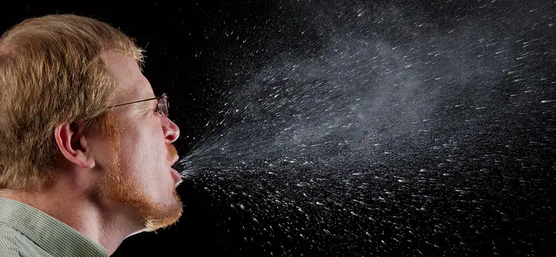
The respiratory tract is one of the main portals of entry into the human body for microbial pathogens. On average, a human takes about 20,000 breaths each day. This roughly corresponds to 10,000 liters, or 10 cubic meters, of air. Suspended within this volume of air are millions of microbes of terrestrial, animal, and human origin—including many potential pathogens. A few of these pathogens will cause relatively mild infections like sore throats and colds. Others, however, are less benign. According to the World Health Organization, respiratory tract infections such as tuberculosis, influenza, and pneumonia were responsible for more than 4 million deaths worldwide in 2012.1
At one time, it was thought that antimicrobial drugs and preventive vaccines might hold respiratory infections in check in the developed world, but recent developments suggest otherwise. The rise of multiple-antibiotic resistance in organisms like Mycobacterium tuberculosis has rendered many of our modern drugs ineffective. In addition, there has been a recent resurgence in diseases like whooping cough and measles, once-common childhood illnesses made rare by effective vaccines. Despite advances in medicine and public health programs, it is likely that respiratory pathogens will remain formidable adversaries for the foreseeable future.
22.1 Anatomy and Normal Microbiota of the Respiratory Tract¶
Learning Objectives
By the end of this section, you will be able to:
- Describe the major anatomical features of the upper and lower respiratory tract
- Describe the normal microbiota of the upper and lower respiratory tracts
- Explain how microorganisms overcome defenses of upper and lower respiratory-tract membranes to cause infection
- Explain how microbes and the respiratory system interact and modify each other in healthy individuals and during an infection
Clinical Focus: Part 1
John, a 65-year-old man with asthma and type 2 diabetes, works as a sales associate at a local home improvement store. Recently, he began to feel quite ill and made an appointment with his family physician. At the clinic, John reported experiencing headache, chest pain, coughing, and shortness of breath. Over the past day, he had also experienced some nausea and diarrhea. A nurse took his temperature and found that he was running a fever of 40 °C (104 °F).
John suggested that he must have a case of influenza (flu), and regretted that he had put off getting his flu vaccine this year. After listening to John’s breathing through a stethoscope, the physician ordered a chest radiography and collected blood, urine, and sputum samples.
- Based on this information, what factors may have contributed to John’s illness?
Jump to the next Clinical Focus box.
The primary function of the respiratory tract is to exchange gases (oxygen and carbon dioxide) for metabolism. However, inhalation and exhalation (particularly when forceful) can also serve as a vehicle of transmission for pathogens between individuals.
Anatomy of the Upper Respiratory System¶
The respiratory system can be conceptually divided into upper and lower regions at the point of the epiglottis, the structure that seals off the lower respiratory system from the pharynx during swallowing (Figure 22.2). The upper respiratory system is in direct contact with the external environment. The nares (or nostrils) are the external openings of the nose that lead back into the nasal cavity, a large air-filled space behind the nares. These anatomical sites constitute the primary opening and first section of the respiratory tract, respectively. The nasal cavity is lined with hairs that trap large particles, like dust and pollen, and prevent their access to deeper tissues. The nasal cavity is also lined with a mucous membrane and Bowman’s glands that produce mucus to help trap particles and microorganisms for removal. The nasal cavity is connected to several other air-filled spaces. The sinuses, a set of four, paired small cavities in the skull, communicate with the nasal cavity through a series of small openings. The nasopharynx is part of the upper throat extending from the posterior nasal cavity. The nasopharynx carries air inhaled through the nose. The middle ear is connected to the nasopharynx through the eustachian tube. The middle ear is separated from the outer ear by the tympanic membrane, or ear drum. And finally, the lacrimal glands drain to the nasal cavity through the nasolacrimal ducts (tear ducts). The open connections between these sites allow microorganisms to move from the nasal cavity to the sinuses, middle ears (and back), and down into the lower respiratory tract from the nasopharynx.
The oral cavity is a secondary opening for the respiratory tract. The oral and nasal cavities connect through the fauces to the pharynx, or throat. The pharynx can be divided into three regions: the nasopharynx, the oropharynx, and the laryngopharynx. Air inhaled through the mouth does not pass through the nasopharynx; it proceeds first through the oropharynx and then through the laryngopharynx. The palatine tonsils, which consist of lymphoid tissue, are located within the oropharynx. The laryngopharynx, the last portion of the pharynx, connects to the larynx, which contains the vocal fold (Figure 22.2).
![a) diagram of ear; a closeup shows the bones and membranes of the middle ear. The eardrum is a flat disk labeled tympanic membrane. Behind this is the tympanic cavity (middle ear) which contains the bones. A tube boing downward from the middle ear is labeled Eustachian tube (auditory tube). b) A diagram of a cross section of the head. Above the nose is a space in the bone labeled frontal sinus. The space in the nose is the nasal cavity and a duct in the nose is the nasolacrimal duct. A space in the bone behind the nose is the sphenoid sinus. At the back of the nose is the opening of the Eustachian tube (auditory tube). Behind that is the pharyngeal tonsil. Below that is a tube labeled nasopharynx which becomes the pharynx which because the oropharynx (behind the mouth) which becomes the laryngopharynx, which becomes the esophagus. Vocal folds are found just beyond the laryngopharynx in the larynx a tube which becomes the trachea. The epiglottis is a flap the determines if material in the pharynx travels to the esophagus or the trachea because the mouth also leads to the pharynx. The mouth contains the tongue. Underneath the tongue is the lingual tonsil and at the back of the mouth is the palatine tonsil. At the very back of the mouth is the fauces. In front of the trachea is the thyroid gland.](img/osc-microbio-22-01-upperresp.webp)
Check Your Understanding
- Identify the sequence of anatomical structures through which microbes would pass on their way from the nares to the larynx.
- What two anatomical points do the eustachian tubes connect?
Anatomy of the Lower Respiratory System¶
The lower respiratory system begins below the epiglottis in the larynx or voice box (Figure 22.3). The trachea, or windpipe, is a cartilaginous tube extending from the larynx that provides an unobstructed path for air to reach the lungs. The trachea bifurcates into the left and right bronchi as it reaches the lungs. These paths branch repeatedly to form smaller and more extensive networks of tubes, the bronchioles. The terminal bronchioles formed in this tree-like network end in cul-de-sacs called the alveoli. These structures are surrounded by capillary networks and are the site of gas exchange in the respiratory system. Human lungs contain on the order of 400,000,000 alveoli. The outer surface of the lungs is protected with a double-layered pleural membrane. This structure protects the lungs and provides lubrication to permit the lungs to move easily during respiration.
![A drawA drawing of the lower respiratory system. The epiglottis is a flap that can allow material into the larynx. The larynx is a tube that leads to the trachea. The trachea branches to become the primary bronchi. These branch to become the secondary bronchi, these branch to become the tertiary bronchi. These branch to become the bronchioles. Terminal bronchioles end in clusters of balloon shapes called alveolar sacs. Each balloon shape is an alveolus. Thin, webbed capillaries cover the outside of the alveolus and are connected to pulmonary veins and pulmonary arteries. Oxygen from the alveolus travels into the capillary and carbon dioxide from the capillary travels into the alveolus. ing of the lower respiratory system. The epiglottis is a flap that can allow material into the larynx. The larynx is a tube that leads to the trachea. The trachea branches to become the primary bronchi. These branch to become the secondary bronchi, these branch to become the tertiary bronchi. These branch to become the bronchioles. Terminal bronchioles end in clusters of balloon shapes called alveolar sacs. Each balloon shape is an alveolus. Thin, webbed capillaries cover the outside of the alveolus and are connected to pulmonary veins and pulmonary arteries. Oxygen from the alveolus travels into the capillary and carbon dioxide from the capillary travels into the alveolus.](img/osc-microbio-22-01-lowerresp.webp)
Defenses of the Respiratory System¶
The inner lining of the respiratory system consists of mucous membranes (Figure 22.4) and is protected by multiple immune defenses. The goblet cells within the respiratory epithelium secrete a layer of sticky mucus. The viscosity and acidity of this secretion inhibits microbial attachment to the underlying cells. In addition, the respiratory tract contains ciliated epithelial cells. The beating cilia dislodge and propel the mucus, and any trapped microbes, upward to the epiglottis, where they will be swallowed. Elimination of microbes in this manner is referred to as the mucociliary escalator effect and is an important mechanism that prevents inhaled microorganisms from migrating further into the lower respiratory tract.
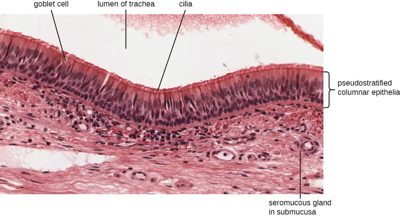
The upper respiratory system is under constant surveillance by mucosa-associated lymphoid tissue (MALT), including the adenoids and tonsils. Other mucosal defenses include secreted antibodies (IgA), lysozyme, surfactant, and antimicrobial peptides called defensins. Meanwhile, the lower respiratory tract is protected by alveolar macrophages. These phagocytes efficiently kill any microbes that manage to evade the other defenses. The combined action of these factors renders the lower respiratory tract nearly devoid of colonized microbes.
Check Your Understanding
- Identify the sequence of anatomical structures through which microbes would pass on their way from the larynx to the alveoli.
- Name some defenses of the respiratory system that protect against microbial infection.
Normal Microbiota of the Respiratory System¶
The upper respiratory tract contains an abundant and diverse microbiota. The nasal passages and sinuses are primarily colonized by members of the Firmicutes, Actinobacteria, and Proteobacteria. The most common bacteria identified include Staphylococcus epidermidis, viridans group streptococci (VGS), Corynebacterium spp. (diphtheroids), Cutibacterium spp., and Haemophilus spp. The oropharynx includes many of the same isolates as the nose and sinuses, with the addition of variable numbers of bacteria like species of Prevotella, Fusobacterium, Moraxella, and Eikenella, as well as some Candida fungal isolates. In addition, many healthy humans asymptomatically carry potential pathogens in the upper respiratory tract. As much as 20% of the population carry Staphylococcus aureus in their nostrils.2 The pharynx, too, can be colonized with pathogenic strains of Streptococcus, Haemophilus, and Neisseria.
The lower respiratory tract, by contrast, is scantily populated with microbes. Of the organisms identified in the lower respiratory tract, species of Pseudomonas, Streptococcus, Prevotella, Fusobacterium, and Veillonella are the most common. It is not clear at this time if these small populations of bacteria constitute a normal microbiota or if they are transients.
Many members of the respiratory system’s normal microbiota are opportunistic pathogens. To proliferate and cause host damage, they first must overcome the immune defenses of respiratory tissues. Many mucosal pathogens produce virulence factors such as adhesins that mediate attachment to host epithelial cells, or polysaccharide capsules that allow microbes to evade phagocytosis. The endotoxins of gram-negative bacteria can stimulate a strong inflammatory response that damages respiratory cells. Other pathogens produce exotoxins, and still others have the ability to survive within the host cells. Once an infection of the respiratory tract is established, it tends to impair the mucociliary escalator, limiting the body’s ability to expel the invading microbes, thus making it easier for pathogens to multiply and spread.
Vaccines have been developed for many of the most serious bacterial and viral pathogens. Several of the most important respiratory pathogens and their vaccines, if available, are summarized in Table 22.1. Components of these vaccines will be explained later in the chapter.
Table 22.1
| Some Important Respiratory Diseases and Vaccines | ||
|---|---|---|
| Disease | Pathogen | Available Vaccine(s)3 |
| Chickenpox/shingles | Varicella-zoster virus | Varicella (chickenpox) vaccine, herpes zoster (shingles) vaccine |
| Common cold | Rhinovirus | None |
| Diphtheria | Corynebacterium diphtheriae | DtaP, Tdap, DT,Td, DTP |
| Epiglottitis, otitis media | Haemophilus influenzae | Hib |
| Influenza | Influenza viruses | Inactivated, FluMist |
| Measles | Measles virus | MMR |
| Pertussis | Bordetella pertussis | DTaP, Tdap |
| Pneumonia | Streptococcus pneumoniae | Pneumococcal conjugate vaccine (PCV13), pneumococcal polysaccharide vaccine (PPSV23) |
| Rubella (German measles) | Rubella virus | MMR |
| Severe acute respiratory syndrome (SARS) | SARS-associated coronavirus (SARS-CoV) | None |
| Tuberculosis | Mycobacterium tuberculosis | BCG |
Check Your Understanding
- What are some pathogenic bacteria that are part of the normal microbiota of the respiratory tract?
- What virulence factors are used by pathogens to overcome the immune protection of the respiratory tract?
Signs and Symptoms of Respiratory Infection¶
Microbial diseases of the respiratory system typically result in an acute inflammatory response. These infections can be grouped by the location affected and have names ending in “itis”, which literally means inflammation of. For instance, rhinitis is an inflammation of the nasal cavities, often characteristic of the common cold. Rhinitis may also be associated with hay fever allergies or other irritants. Inflammation of the sinuses is called sinusitis inflammation of the ear is called otitis. Otitis media is an inflammation of the middle ear. A variety of microbes can cause pharyngitis, commonly known as a sore throat. An inflammation of the larynx is called laryngitis. The resulting inflammation may interfere with vocal cord function, causing voice loss. When tonsils are inflamed, it is called tonsillitis. Chronic cases of tonsillitis may be treated surgically with tonsillectomy. More rarely, the epiglottis can be infected, a condition called epiglottitis. In the lower respiratory system, the inflammation of the bronchial tubes results in bronchitis. Most serious of all is pneumonia, in which the alveoli in the lungs are infected and become inflamed. Pus and edema accumulate and fill the alveoli with fluids (called consolidations). This reduces the lungs’ ability to exchange gases and often results in a productive cough expelling phlegm and mucus. Cases of pneumonia can range from mild to life-threatening, and remain an important cause of mortality in the very young and very old.
Check Your Understanding
- Describe the typical symptoms of rhinitis, sinusitis, pharyngitis, and laryngitis.
Case in Point: Smoking-Associated Pneumonia
Camila is a 22-year-old student who has been a chronic smoker for 5 years. Recently, she developed a persistent cough that has not responded to over-the-counter treatments. Her doctor ordered a chest radiograph to investigate. The radiological results were consistent with pneumonia. In addition, Streptococcus pneumoniae was isolated from Camila’s sputum.
Smokers are at a greater risk of developing pneumonia than the general population. Several components of tobacco smoke have been demonstrated to impair the lungs’ immune defenses. These effects include disrupting the function of the ciliated epithelial cells, inhibiting phagocytosis, and blocking the action of antimicrobial peptides. Together, these lead to a dysfunction of the mucociliary escalator effect. The organisms trapped in the mucus are therefore able to colonize the lungs and cause infections rather than being expelled or swallowed.
22.2 Bacterial Infections of the Respiratory Tract¶
Learning Objectives
By the end of this section, you will be able to:
- Identify the most common bacteria that can cause infections of the upper and lower respiratory tract
- Compare the major characteristics of specific bacterial diseases of the respiratory tract
The respiratory tract can be infected by a variety of bacteria, both gram positive and gram negative. Although the diseases that they cause may range from mild to severe, in most cases, the microbes remain localized within the respiratory system. Fortunately, most of these infections also respond well to antibiotic therapy.
Streptococcal Infections¶
A common upper respiratory infection, streptococcal pharyngitis (strep throat) is caused by Streptococcus pyogenes. This gram-positive bacterium appears as chains of cocci, as seen in Figure 22.5. Rebecca Lancefield serologically classified streptococci in the 1930s using carbohydrate antigens from the bacterial cell walls. S. pyogenes is the sole member of the Lancefield group A streptococci and is often referred to as GAS, or group A strep.
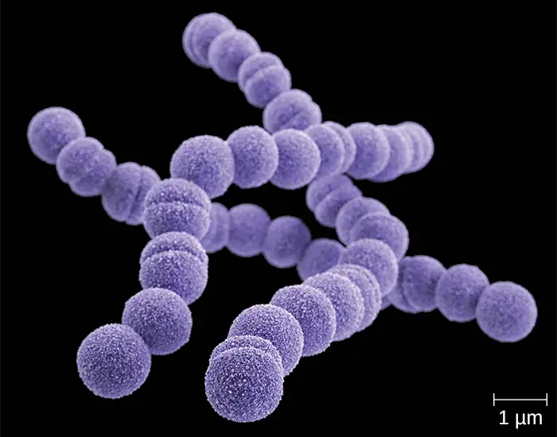
Similar to streptococcal infections of the skin, the mucosal membranes of the pharynx are damaged by the release of a variety of exoenzymes and exotoxins by this extracellular pathogen. Many strains of S. pyogenes can degrade connective tissues by using hyaluronidase, collagenase and streptokinase. Streptokinase activates plasmin, which leads to degradation of fibrin and, in turn, dissolution of blood clots, which assists in the spread of the pathogen. Released toxins include streptolysins that can destroy red and white blood cells. The classic signs of streptococcal pharyngitis are a fever higher than 38 °C (100.4 °F); intense pharyngeal pain; erythema associated with pharyngeal inflammation; and swollen, dark-red palatine tonsils, often dotted with patches of pus; and petechiae (microcapillary hemorrhages) on the soft or hard palate (roof of the mouth) (Figure 22.6). The submandibular lymph nodes beneath the angle of the jaw are also often swollen during strep throat.
Some strains of group A streptococci produce erythrogenic toxin. This exotoxin is encoded by a temperate bacteriophage (bacterial virus) and is an example of phage conversion (see The Viral Life Cycle). The toxin attacks the plasma membranes of capillary endothelial cells and leads to scarlet fever (or scarlatina), a disseminated fine red rash on the skin, and strawberry tongue, a red rash on the tongue (Figure 22.6). Severe cases may even lead to streptococcal toxic shock syndrome (STSS), which results from massive superantigen production that leads to septic shock and death.
S. pyogenes can be easily spread by direct contact or droplet transmission through coughing and sneezing. The disease can be diagnosed quickly using a rapid enzyme immunoassay for the group A antigen. However, due to a significant rate of false-negative results (up to 30%4), culture identification is still the gold standard to confirm pharyngitis due to S. pyogenes. S. pyogenes can be identified as a catalase-negative, beta hemolytic bacterium that is susceptible to 0.04 units of bacitracin. Antibiotic resistance is limited for this bacterium, so most β-lactams remain effective; oral amoxicillin and intramuscular penicillin G are those most commonly prescribed.
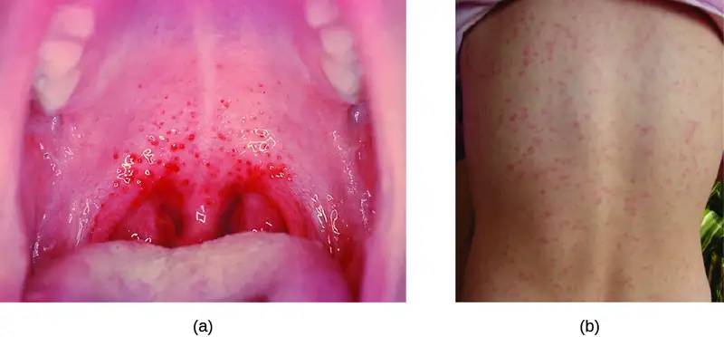
Sequelae of S. pyogenes Infections¶
One reason strep throat infections are aggressively treated with antibiotics is because they can lead to serious sequelae, later clinical consequences of a primary infection. It is estimated that 1%–3% of untreated S. pyogenes infections can be followed by nonsuppurative (without the production of pus) sequelae that develop 1–3 weeks after the acute infection has resolved. Two such sequelae are acute rheumatic fever and acute glomerulonephritis.
Acute rheumatic fever can follow pharyngitis caused by specific rheumatogenic strains of S. pyogenes (strains 1, 3, 5, 6, and 18). Although the exact mechanism responsible for this sequela remains unclear, molecular mimicry between the M protein of rheumatogenic strains of S. pyogenes and heart tissue is thought to initiate the autoimmune attack. The most serious and lethal clinical manifestation of rheumatic fever is damage to and inflammation of the heart (carditis). Acute glomerulonephritis also results from an immune response to streptococcal antigens following pharyngitis and cutaneous infections. Acute glomerulonephritis develops within 6–10 days after pharyngitis, but can take up to 21 days after a cutaneous infection. Similar to acute rheumatic fever, there are strong associations between specific nephritogenic strains of S. pyogenes and acute glomerulonephritis, and evidence suggests a role for antigen mimicry and autoimmunity. However, the primary mechanism of acute glomerulonephritis appears to be the formation of immune complexes between S. pyogenes antigens and antibodies, and their deposition between endothelial cells of the glomeruli of kidney. Inflammatory response against the immune complexes leads to damage and inflammation of the glomeruli (glomerulonephritis).
Check Your Understanding
- What are the symptoms of strep throat?
- What is erythrogenic toxin and what effect does it have?
- What are the causes of rheumatic fever and acute glomerulonephritis?
Acute Otitis Media¶
An infection of the middle ear is called acute otitis media (AOM), but often it is simply referred to as an earache. The condition is most common between ages 3 months and 3 years. In the United States, AOM is the second-leading cause of visits to pediatricians by children younger than age 5 years, and it is the leading indication for antibiotic prescription.5
AOM is characterized by the formation and accumulation of pus in the middle ear. Unable to drain, the pus builds up, resulting in moderate to severe bulging of the tympanic membrane and otalgia (ear pain). Inflammation resulting from the infection leads to swelling of the eustachian tubes, and may also lead to fever, nausea, vomiting, and diarrhea, particularly in infants. Infants and toddlers who cannot yet speak may exhibit nonverbal signs suggesting AOM, such as holding, tugging, or rubbing of the ear, as well as uncharacteristic crying or distress in response to the pain.
AOM can be caused by a variety of bacteria. Among neonates, S. pneumoniae is the most common cause of AOM, but Escherichia coli, Enterococcus spp., and group B Streptococcus species can also be involved. In older infants and children younger than 14 years old, the most common bacterial causes are S. pneumoniae, Haemophilus influenzae, or Moraxella catarrhalis. Among S. pneumoniae infections, encapsulated strains are frequent causes of AOM. By contrast, the strains of H. influenzae and M. cattarhalis that are responsible for AOM do not possess a capsule. Rather than direct tissue damage by these pathogens, bacterial components such as lipopolysaccharide (LPS) in gram-negative pathogens induce an inflammatory response that causes swelling, pus, and tissue damage within the middle ear (Figure 22.7).
Any blockage of the eustachian tubes, with or without infection, can cause fluid to become trapped and accumulate in the middle ear. This is referred to as otitis media with effusion (OME). The accumulated fluid offers an excellent reservoir for microbial growth and, consequently, secondary bacterial infections often ensue. This can lead to recurring and chronic earaches, which are especially common in young children. The higher incidence in children can be attributed to many factors. Children have more upper respiratory infections, in general, and their eustachian tubes are also shorter and drain at a shallower angle. Young children also tend to spend more time lying down than adults, which facilitates drainage from the nasopharynx through the eustachian tube and into the middle ear. Bottle feeding while lying down enhances this risk because the sucking action on the bottle causes negative pressure to build up within the eustachian tube, promoting the movement of fluid and bacteria from the nasopharynx.
Diagnosis is typically made based on clinical signs and symptoms, without laboratory testing to determine the specific causative agent. Antibiotics are frequently prescribed for the treatment of AOM. High-dose amoxicillin is the first-line drug, but with increasing resistance concerns, macrolides and cephalosporins may also be used. The pneumococcal conjugate vaccine (PCV13) contains serotypes that are important causes of AOM, and vaccination has been shown to decrease the incidence of AOM. Vaccination against influenza has also been shown to decrease the risk for AOM, likely because viral infections like influenza predispose patients to secondary infections with S. pneumoniae. Although there is a conjugate vaccine available for the invasive serotype B of H. influenzae, this vaccine does not impact the incidence of H. influenzae AOM. Because unencapsulated strains of H. influenzae and M. catarrhalis are involved in AOM, vaccines against bacterial cellular factors other than capsules will need to be developed.
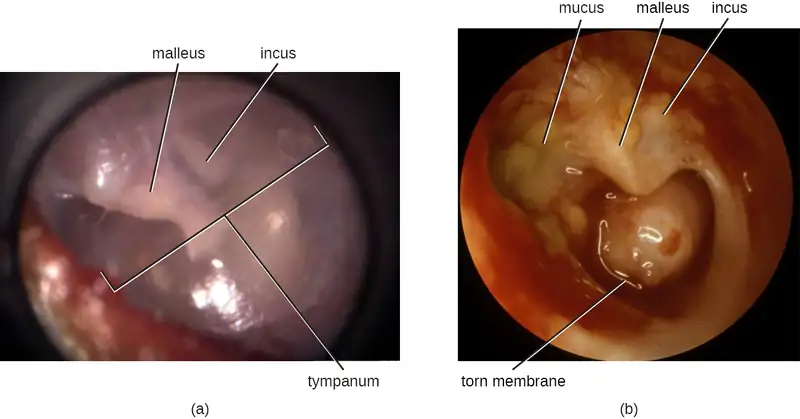
Bacterial Rhinosinusitis¶
The microbial community of the nasopharynx is extremely diverse and harbors many opportunistic pathogens, so it is perhaps not surprising that infections leading to rhinitis and sinusitis have many possible causes. These conditions often occur as secondary infections after a viral infection, which effectively compromises the immune defenses and allows the opportunistic bacteria to establish themselves. Bacterial sinusitis involves infection and inflammation within the paranasal sinuses. Because bacterial sinusitis rarely occurs without rhinitis, the preferred term is rhinosinusitis. The most common causes of bacterial rhinosinusitis are similar to those for AOM, including S. pneumoniae, H. influenzae, and M. catarrhalis.
Check Your Understanding
- What are the usual causative agents of acute otitis media?
- What factors facilitate acute otitis media with effusion in young children?
- What factor often triggers bacterial rhinosinusitis?
Diphtheria¶
The causative agent of diphtheria, Corynebacterium diphtheriae, is a club-shaped, gram-positive rod that belongs to the phylum Actinobacteria. Diphtheroids are common members of the normal nasopharyngeal microbiota. However, some strains of C. diphtheriae become pathogenic because of the presence of a temperate bacteriophage-encoded protein—the diphtheria toxin. Diphtheria is typically a respiratory infection of the oropharynx but can also cause impetigo-like lesions on the skin. Although the disease can affect people of all ages, it tends to be most severe in those younger than 5 years or older than 40 years. Like strep throat, diphtheria is commonly transmitted in the droplets and aerosols produced by coughing. After colonizing the throat, the bacterium remains in the oral cavity and begins producing the diphtheria toxin. This protein is an A-B toxin that blocks host-cell protein synthesis by inactivating elongation factor (EF)-2 (see Virulence Factors of Bacterial and Viral Pathogens). The toxin’s action leads to the death of the host cells and an inflammatory response. An accumulation of grayish exudate consisting of dead host cells, pus, red blood cells, fibrin, and infectious bacteria results in the formation of a pseudomembrane. The pseudomembrane can cover mucous membranes of the nasal cavity, tonsils, pharynx, and larynx (Figure 22.8). This is a classic sign of diphtheria. As the disease progresses, the pseudomembrane can enlarge to obstruct the fauces of the pharynx or trachea and can lead to suffocation and death. Sometimes, intubation, the placement of a breathing tube in the trachea, is required in advanced infections. If the diphtheria toxin spreads throughout the body, it can damage other tissues as well. This can include myocarditis (heart damage) and nerve damage that may impair breathing.
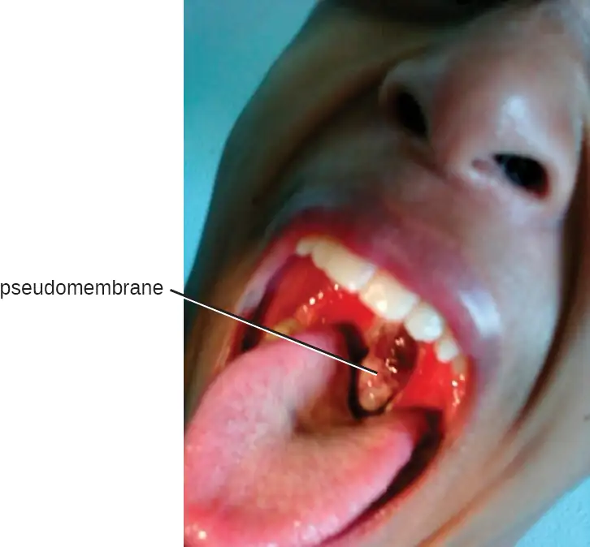
The presumptive diagnosis of diphtheria is primarily based on the clinical symptoms (i.e., the pseudomembrane) and vaccination history, and is typically confirmed by identifying bacterial cultures obtained from throat swabs. The diphtheria toxin itself can be directly detected in vitro using polymerase chain reaction (PCR)-based, direct detection systems for the diphtheria tox gene, and immunological techniques like radial immunodiffusion or Elek’s immunodiffusion test.
Broad-spectrum antibiotics like penicillin and erythromycin tend to effectively control C. diphtheriae infections. Regrettably, they have no effect against preformed toxins. If toxin production has already occurred in the patient, antitoxins (preformed antibodies against the toxin) are administered. Although this is effective in neutralizing the toxin, the antitoxins may lead to serum sickness because they are produced in horses (see Hypersensitivities).
Widespread vaccination efforts have reduced the occurrence of diphtheria worldwide. There are currently four combination toxoid vaccines available that provide protection against diphtheria and other diseases: DTaP, Tdap, DT, and Td. In all cases, the letters “d,” “t,” and “p” stand for diphtheria, tetanus, and pertussis, respectively; the “a” stands for acellular. If capitalized, the letters indicate a full-strength dose; lowercase letters indicate reduced dosages. According to current recommendations, children should receive five doses of the DTaP vaccine in their youth and a Td booster every 10 years. Children with adverse reactions to the pertussis vaccine may be given the DT vaccine in place of the DTaP.
Check Your Understanding
- What effect does diphtheria toxin have?
- What is the pseudomembrane composed of?
Bacterial Pneumonia¶
Pneumonia is a general term for infections of the lungs that lead to inflammation and accumulation of fluids and white blood cells in the alveoli. Pneumonia can be caused by bacteria, viruses, fungi, and other organisms, although the vast majority of pneumonias are bacterial in origin. Bacterial pneumonia is a prevalent, potentially serious infection; it caused more 50,000 deaths in the United States in 2014.6 As the alveoli fill with fluids and white blood cells (consolidation), air exchange becomes impaired and patients experience respiratory distress (Figure 22.9). In addition, pneumonia can lead to pleurisy, an infection of the pleural membrane surrounding the lungs, which can make breathing very painful. Although many different bacteria can cause pneumonia under the right circumstances, three bacterial species cause most clinical cases: Streptococcus pneumoniae, H. influenzae, and Mycoplasma pneumoniae. In addition to these, we will also examine some of the less common causes of pneumonia.
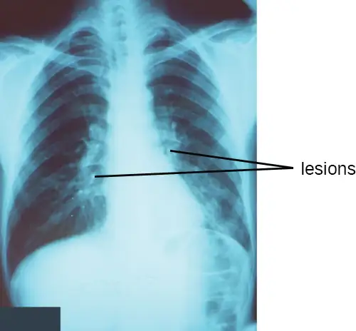
Pneumococcal Pneumonia¶
The most common cause of community-acquired bacterial pneumonia is Streptococcus pneumoniae. This gram-positive, alpha hemolytic streptococcus is commonly found as part of the normal microbiota of the human respiratory tract. The cells tend to be somewhat lancet-shaped and typically appear as pairs (Figure 22.10). The pneumococci initially colonize the bronchioles of the lungs. Eventually, the infection spreads to the alveoli, where the microbe’s polysaccharide capsule interferes with phagocytic clearance. Other virulence factors include autolysins like Lyt A, which degrade the microbial cell wall, resulting in cell lysis and the release of cytoplasmic virulence factors. One of these factors, pneumolysin O, is important in disease progression; this pore-forming protein damages host cells, promotes bacterial adherence, and enhances pro-inflammatory cytokine production. The resulting inflammatory response causes the alveoli to fill with exudate rich in neutrophils and red blood cells. As a consequence, infected individuals develop a productive cough with bloody sputum.
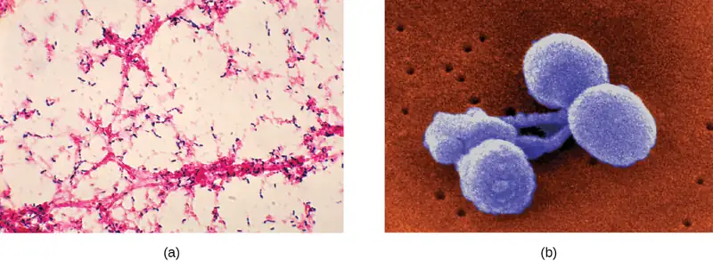
Pneumococci can be presumptively identified by their distinctive gram-positive, lancet-shaped cell morphology and diplococcal arrangement. In blood agar cultures, the organism demonstrates alpha hemolytic colonies that are autolytic after 24 to 48 hours. In addition, S. pneumoniae is extremely sensitive to optochin and colonies are rapidly destroyed by the addition of 10% solution of sodium deoxycholate. All clinical pneumococcal isolates are serotyped using the quellung reaction with typing antisera produced by the CDC. Positive quellung reactions are considered definitive identification of pneumococci.
Antibiotics remain the mainstay treatment for pneumococci. β-Lactams like penicillin are the first-line drugs, but resistance to β-lactams is a growing problem. When β-lactam resistance is a concern, macrolides and fluoroquinolones may be prescribed. However, S. pneumoniae resistance to macrolides and fluoroquinolones is increasing as well, limiting the therapeutic options for some infections. There are currently two pneumococcal vaccines available: pneumococcal conjugate vaccine (PCV13) and pneumococcal polysaccharide vaccine (PPSV23). These are generally given to the most vulnerable populations of individuals: children younger than 2 years and adults older than 65 years.
Haemophilus Pneumonia¶
Encapsulated strains of Haemophilus influenzae are known for causing meningitis, but nonencapsulated strains are important causes of pneumonia. This small, gram-negative coccobacillus is found in the pharynx of the majority of healthy children; however, Haemophilus pneumonia is primarily seen in the elderly. Like other pathogens that cause pneumonia, H. influenzae is spread by droplets and aerosols produced by coughing. A fastidious organism, H. influenzae will only grow on media with available factor X (hemin) and factor V (NAD), like chocolate agar (Figure 22.11). Serotyping must be performed to confirm identity of H. influenzae isolates.
Infections of the alveoli by H. influenzae result in inflammation and accumulation of fluids. Increasing resistance to β-lactams, macrolides, and tetracyclines presents challenges for the treatment of Haemophilus pneumonia. Resistance to the fluoroquinolones is rare among isolates of H. influenzae but has been observed. As discussed for AOM, a vaccine directed against nonencapsulated H. influenzae, if developed, would provide protection against pneumonia caused by this pathogen.
Case in Point: Why Me?
Tracy is a 6-year old who developed a serious cough that would not seem to go away. After 2 weeks, her parents became concerned and took her to the pediatrician, who suspected a case of bacterial pneumonia. Tests confirmed that the cause was Haemophilus influenzae. Fortunately, Tracy responded well to antibiotic treatment and eventually made a full recovery.
Because there had been several other cases of bacterial pneumonia at Tracy’s elementary school, local health officials urged parents to have their children screened. Of the children who were screened, it was discovered that greater than 50% carried H. influenzae in their nasal cavities, yet all but two of them were asymptomatic.
Why is it that some individuals become seriously ill from bacterial infections that seem to have little or no effect on others? The pathogenicity of an organism—its ability to cause host damage—is not solely a property of the microorganism. Rather, it is the product of a complex relationship between the microbe’s virulence factors and the immune defenses of the individual. Preexisting conditions and environmental factors such as exposure to secondhand smoke can make some individuals more susceptible to infection by producing conditions favorable to microbial growth or compromising the immune system. In addition, individuals may have genetically determined immune factors that protect them—or not—from particular strains of pathogens. The interactions between these host factors and the pathogenicity factors produced by the microorganism ultimately determine the outcome of the infection. A clearer understanding of these interactions may allow for better identification of at-risk individuals and prophylactic interventions in the future.
Mycoplasma Pneumonia (Walking Pneumonia)¶
Primary atypical pneumonia is caused by Mycoplasma pneumoniae. This bacterium is not part of the respiratory tract’s normal microbiota and can cause epidemic disease outbreaks. Also known as walking pneumonia, mycoplasma pneumonia infections are common in crowded environments like college campuses and military bases. It is spread by aerosols formed when coughing or sneezing. The disease is often mild, with a low fever and persistent cough. These bacteria, which do not have cell walls, use a specialized attachment organelle to bind to ciliated cells. In the process, epithelial cells are damaged and the proper function of the cilia is hindered (Figure 22.12).
Mycoplasma grow very slowly when cultured. Therefore, penicillin and thallium acetate are added to agar to prevent the overgrowth by faster-growing potential contaminants. Since M. pneumoniae does not have a cell wall, it is resistant to these substances. Without a cell wall, the microbial cells appear pleomorphic. M. pneumoniae infections tend to be self-limiting but may also respond well to macrolide antibiotic therapy. β-lactams, which target cell wall synthesis, are not indicated for treatment of infections with this pathogen.
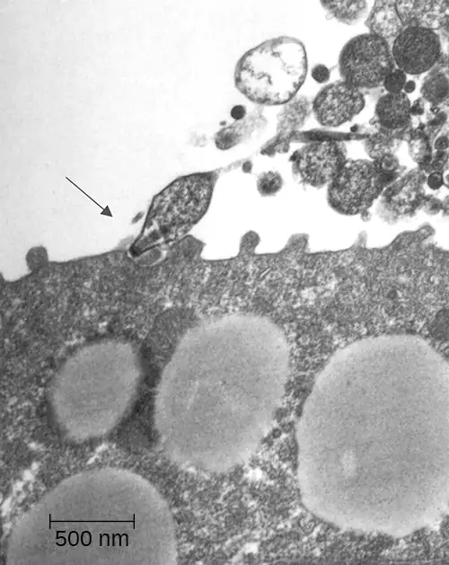
Chlamydial Pneumonias and Psittacosis¶
Chlamydial pneumonia can be caused by three different species of bacteria: Chlamydia, Chlamydia psittaci, and Chlamydia trachomatis. All three are obligate intracellular pathogens and cause mild to severe pneumonia and bronchitis. Of the three, Chlamydia pneumoniae is the most common and is transmitted via respiratory droplets or aerosols. C. psittaci causes psittacosis, a zoonotic disease that primarily affects domesticated birds such as parakeets, turkeys, and ducks, but can be transmitted from birds to humans. Psittacosis is a relatively rare infection and is typically found in people who work with birds. Chlamydia trachomatis, the causative agent of the sexually transmitted disease chlamydia, can cause pneumonia in infants when the infection is passed from a person giving birth to a baby.
Diagnosis of chlamydia by culturing tends to be difficult and slow. Because they are intracellular pathogens, they require multiple passages through tissue culture. Recently, a variety of PCR- and serologically based tests have been developed to enable easier identification of these pathogens. Tetracycline and macrolide antibiotics are typically prescribed for treatment.
Health Care-Associated Pneumonia¶
A variety of opportunistic bacteria that do not typically cause respiratory disease in healthy individuals are common causes of health care-associated pneumonia. These include Klebsiella pneumoniae, Staphylococcus aureus, and proteobacteria such as species of Escherichia, Proteus, and Serratia. Patients at risk include the elderly, those who have other preexisting lung conditions, and those who are immunocompromised. In addition, patients receiving supportive therapies such as intubation, antibiotics, and immunomodulatory drugs may also be at risk because these interventions disrupt the mucociliary escalator and other pulmonary defenses. Invasive medical devices such as catheters, medical implants, and ventilators can also introduce opportunistic pneumonia-causing pathogens into the body.7
Pneumonia caused by K. pneumoniae is characterized by lung necrosis and “currant jelly sputum,” so named because it consists of clumps of blood, mucus, and debris from the thick polysaccharide capsule produced by the bacterium. K. pneumoniae is often multidrug resistant. Aminoglycoside and cephalosporin are often prescribed but are not always effective. Klebsiella pneumonia is frequently fatal even when treated.
Pseudomonas Pneumonia¶
Pseudomonas aeruginosa is another opportunistic pathogen that can cause serious cases of bacterial pneumonia in patients with cystic fibrosis (CF) and hospitalized patients assisted with artificial ventilators. This bacterium is extremely antibiotic resistant and can produce a variety of exotoxins. Ventilator-associated pneumonia with P. aeruginosa is caused by contaminated equipment that causes the pathogen to be aspirated into the lungs. In patients with CF, a genetic defect in the cystic fibrosis transmembrane receptor (CFTR) leads to the accumulation of excess dried mucus in the lungs. This decreases the effectiveness of the defensins and inhibits the mucociliary escalator. P. aeruginosa is known to infect more than half of all patients with CF. It adapts to the conditions in the patient’s lungs and begins to produce alginate, a viscous exopolysaccharide that inhibits the mucociliary escalator. Lung damage from the chronic inflammatory response that ensues is the leading cause of mortality in patients with CF.8
Check Your Understanding
- What three pathogens are responsible for the most prevalent types of bacterial pneumonia?
- Which cause of pneumonia is most likely to affect young people?
- In what contexts does Pseudomonas aeruginosa cause pneumonia?
Clinical Focus: Part 2
John’s chest radiograph revealed an extensive consolidation in the right lung, and his sputum cultures revealed the presence of a gram-negative rod. His physician prescribed a course of the antibiotic clarithromycin. He also ordered the rapid influenza diagnostic tests (RIDTs) for type A and B influenza to rule out a possible underlying viral infection. Despite antibiotic therapy, John’s condition continued to deteriorate, so he was admitted to the hospital.
- What are some possible causes of pneumonia that would not have responded to the prescribed antibiotic?
Jump to the next Clinical Focus box. Go back to the previous Clinical Focus box.
Tuberculosis¶
Tuberculosis (TB) is one of the deadliest infectious diseases in human history. Although tuberculosis infection rates in the United States are extremely low, the CDC estimates that about one-third of the world’s population is infected with Mycobacterium tuberculosis, the causal organism of TB, with 9.6 million new TB cases and 1.5 million deaths worldwide in 2014.9
M. tuberculosis is an acid-fast, high G + C, gram-positive, nonspore-forming rod. Its cell wall is rich in waxy mycolic acids, which make the cells impervious to polar molecules. It also causes these organisms to grow slowly. M. tuberculosis causes a chronic granulomatous disease that can infect any area of the body, although it is typically associated with the lungs. M. tuberculosis is spread by inhalation of respiratory droplets or aerosols from an infected person. The infectious dose of M. tuberculosis is only 10 cells.10
After inhalation, the bacteria enter the alveoli (Figure 22.13). The cells are phagocytized by macrophages but can survive and multiply within these phagocytes because of the protection by the waxy mycolic acid in their cell walls. If not eliminated by macrophages, the infection can progress, causing an inflammatory response and an accumulation of neutrophils and macrophages in the area. Several weeks or months may pass before an immunological response is mounted by T cells and B cells. Eventually, the lesions in the alveoli become walled off, forming small round lesions called tubercles. Bacteria continue to be released into the center of the tubercles and the chronic immune response results in tissue damage and induction of apoptosis (programmed host-cell death) in a process called liquefaction. This creates a caseous center, or air pocket, where the aerobic M. tuberculosis can grow and multiply. Tubercles may eventually rupture and bacterial cells can invade pulmonary capillaries; from there, bacteria can spread through the bloodstream to other organs, a condition known as miliary tuberculosis. The rupture of tubercles also facilitates transmission of the bacteria to other individuals via droplet aerosols that exit the body in coughs. Because these droplets can be very small and stay aloft for a long time, special precautions are necessary when caring for patients with TB, such as the use of face masks and negative-pressure ventilation and filtering systems.
Eventually, most lesions heal to form calcified Ghon complexes. These structures are visible on chest radiographs and are a useful diagnostic feature. But even after the disease has apparently ended, viable bacteria remain sequestered in these locations. Release of these organisms at a later time can produce reactivation tuberculosis (or secondary TB). This is mainly observed in people with alcoholism, the elderly, or in otherwise immunocompromised individuals (Figure 22.13).
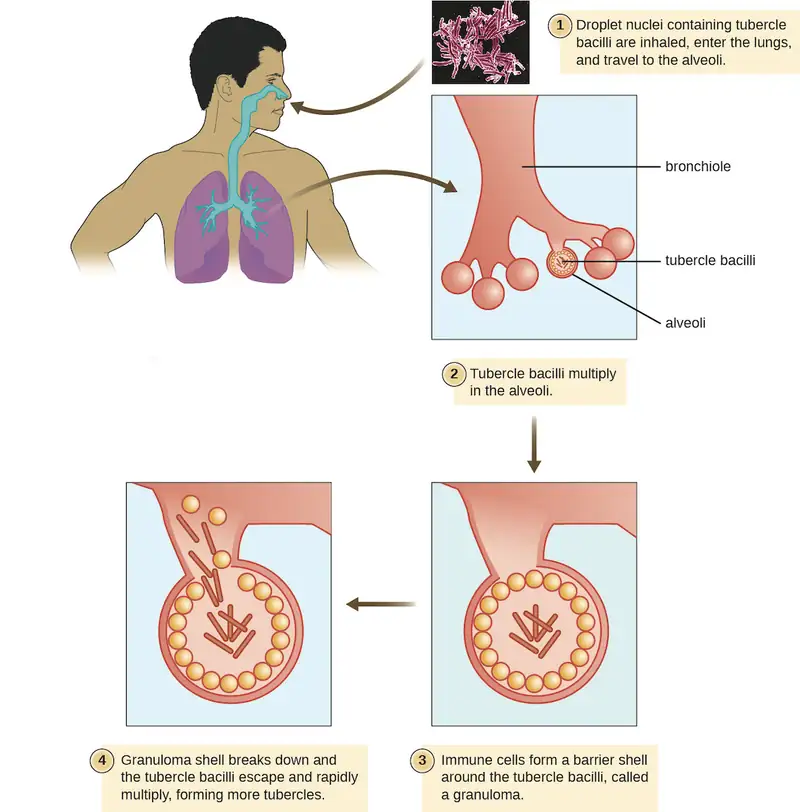
Because TB is a chronic disease, chemotherapeutic treatments often continue for months or years. Multidrug resistant (MDR-TB) and extensively drug-resistant (XDR-TB) strains of M. tuberculosis are a growing clinical concern. These strains can arise due to misuse or mismanagement of antibiotic therapies. Therefore, it is imperative that proper multidrug protocols are used to treat these infections. Common antibiotics included in these mixtures are isoniazid, rifampin, ethambutol, and pyrazinamide.
A TB vaccine is available that is based on the so-called bacillus Calmette-Guérin (BCG) strain of M. bovis commonly found in cattle. In the United States, the BCG vaccine is only given to health-care workers and members of the military who are at risk of exposure to active cases of TB. It is used more broadly worldwide. Many individuals born in other countries have been vaccinated with BCG strain. BCG is used in many countries with a high prevalence of TB, to prevent childhood tuberculous meningitis and miliary disease.
The Mantoux tuberculin skin test (Figure 22.14) is regularly used in the United States to screen for potential TB exposure (see Hypersensitivities). However, prior vaccinations with the BCG vaccine can cause false-positive results. Chest radiographs to detect Ghon complex formation are required, therefore, to confirm exposure.
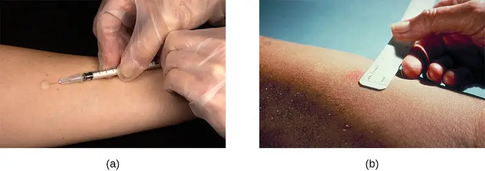
Link to Learning
This short animation describes the mechanisms of infection associated with Mycobacterium tuberculosis.
Check Your Understanding
- What characteristic of Mycobacterium tuberculosis allows it to evade the immune response?
- What happens to cause miliary tuberculosis?
- Explain the limitations of the Mantoux tuberculin skin test.
Pertussis (Whooping Cough)¶
The causative agent of pertussis, commonly called whooping cough, is Bordetella pertussis, a gram-negative coccobacillus. The disease is characterized by mucus accumulation in the lungs that leads to a long period of severe coughing. Sometimes, following a bout of coughing, a sound resembling a “whoop” is produced as air is inhaled through the inflamed and restricted airway—hence the name whooping cough. Although adults can be infected, the symptoms of this disease are most pronounced in infants and children. Pertussis is highly communicable through droplet transmission, so the uncontrollable coughing produced is an efficient means of transmitting the disease in a susceptible population.
Following inhalation, B. pertussis specifically attaches to epithelial cells using an adhesin, filamentous hemagglutinin. The bacteria then grow at the site of infection and cause disease symptoms through the production of exotoxins. One of the main virulence factors of this organism is an A-B exotoxin called the pertussis toxin (PT). When PT enters the host cells, it increases the cyclic adenosine monophosphate (cAMP) levels and disrupts cellular signaling. PT is known to enhance inflammatory responses involving histamine and serotonin. In addition to PT, B. pertussis produces a tracheal cytotoxin that damages ciliated epithelial cells and results in accumulation of mucus in the lungs. The mucus can support the colonization and growth of other microbes and, as a consequence, secondary infections are common. Together, the effects of these factors produce the cough that characterizes this infection.
A pertussis infection can be divided into three distinct stages. The initial infection, termed the catarrhal stage, is relatively mild and unremarkable. The signs and symptoms may include nasal congestion, a runny nose, sneezing, and a low-grade fever. This, however, is the stage in which B. pertussis is most infectious. In the paroxysmal stage, mucus accumulation leads to uncontrollable coughing spasms that can last for several minutes and frequently induce vomiting. The paroxysmal stage can last for several weeks. A long convalescence stage follows the paroxysmal stage, during which time patients experience a chronic cough that can last for up to several months. In fact, the disease is sometimes called the 100-day cough.
In infants, coughing can be forceful enough to cause fractures to the ribs, and prolonged infections can lead to death. The CDC reported 20 pertussis-related deaths in 2012,12 but that number had declined to five by 2015.13
During the first 2 weeks of infection, laboratory diagnosis is best performed by culturing the organism directly from a nasopharyngeal (NP) specimen collected from the posterior nasopharynx. The NP specimen is streaked onto Bordet-Gengou medium. The specimens must be transported to the laboratory as quickly as possible, even if transport media are used. Transport times of longer than 24 hours reduce the viability of B. pertussis significantly.
Within the first month of infection, B. pertussis can be diagnosed using PCR techniques. During the later stages of infection, pertussis-specific antibodies can be immunologically detected using an enzyme-linked immunosorbent assay (ELISA).
Pertussis is generally a self-limiting disease. Antibiotic therapy with erythromycin or tetracycline is only effective at the very earliest stages of disease. Antibiotics given later in the infection, and prophylactically to uninfected individuals, reduce the rate of transmission. Active vaccination is a better approach to control this disease. The DPT vaccine was once in common use in the United States. In that vaccine, the P component consisted of killed whole-cell B. pertussis preparations. Because of some adverse effects, that preparation has now been superseded by the DTaP and Tdap vaccines. In both of these new vaccines, the “aP” component is a pertussis toxoid.
Widespread vaccination has greatly reduced the number of reported cases and prevented large epidemics of pertussis. Recently, however, pertussis has begun to reemerge as a childhood disease in some states because of declining vaccination rates and an increasing population of susceptible children.
Link to Learning
This web page contains an audio clip of the distinctive “whooping” sound associated with pertussis in infants.
This interactive map shows outbreaks of vaccine preventable diseases, including pertussis, around the world.
Check Your Understanding
- What accounts for the mucus production in a pertussis infection?
- What are the signs and symptoms associated with the three stages of pertussis?
- Why is pertussis becoming more common in the United States?
Legionnaires Disease¶
An atypical pneumonia called Legionnaires disease (also known as legionellosis) is caused by an aerobic gram-negative bacillus, Legionella pneumophila. This bacterium infects free-living amoebae that inhabit moist environments, and infections typically occur from human-made reservoirs such as air-conditioning cooling towers, humidifiers, misting systems, and fountains. Aerosols from these reservoirs can lead to infections of susceptible individuals, especially those suffering from chronic heart or lung disease or other conditions that weaken the immune system.
When L. pneumophila bacteria enter the alveoli, they are phagocytized by resident macrophages. However, L. pneumophila uses a secretion system to insert proteins in the endosomal membrane of the macrophage; these proteins prevent lysosomal fusion, allowing L. pneumophila to continue to proliferate within the phagosome. The resulting respiratory disease can range from mild to severe pneumonia, depending on the status of the host’s immune defenses. Although this disease primarily affects the lungs, it can also cause fever, nausea, vomiting, confusion, and other neurological effects.
Diagnosis of Legionnaires disease is somewhat complicated. L. pneumophila is a fastidious bacterium and is difficult to culture. In addition, since the bacterial cells are not efficiently stained with the Gram stain, other staining techniques, such as the Warthin-Starry silver-precipitate procedure, must be used to visualize this pathogen. A rapid diagnostic test has been developed that detects the presence of Legionella antigen in a patient’s urine; results take less than 1 hour, and the test has high selectivity and specificity (greater than 90%). Unfortunately, the test only works for one serotype of L. pneumophila (type 1, the serotype responsible for most infections). Consequently, isolation and identification of L. pneumophila from sputum remains the defining test for diagnosis.
Once diagnosed, Legionnaire disease can be effectively treated with fluoroquinolone and macrolide antibiotics. However, the disease is sometimes fatal; about 10% of patients die of complications.14 There is currently no vaccine available.
Check Your Understanding
- Why is Legionnaires disease associated with air-conditioning systems?
- How does Legionella pneumophila circumvent the immune system?
Q Fever¶
The zoonotic disease Q fever is caused by a rickettsia, Coxiella burnetii. The primary reservoirs for this bacterium are domesticated livestock such as cattle, sheep, and goats. The bacterium may be transmitted by ticks or through exposure to the urine, feces, milk, or amniotic fluid of an infected animal. In humans, the primary route of infection is through inhalation of contaminated farmyard aerosols. It is, therefore, largely an occupational disease of farmers. Humans are acutely sensitive to C. burnetii—the infective dose is estimated to be just a few cells.15 In addition, the organism is hardy and can survive in a dry environment for an extended time. Symptoms associated with acute Q fever include high fever, headache, coughing, pneumonia, and general malaise. In a small number of patients (less than 5%16), the condition may become chronic, often leading to endocarditis, which may be fatal.
Diagnosing rickettsial infection by cultivation in the laboratory is both difficult and hazardous because of the easy aerosolization of the bacteria, so PCR and ELISA are commonly used. Doxycycline is the first-line drug to treat acute Q fever. In chronic Q fever, doxycycline is often paired with hydroxychloroquine.
Disease Profile: Bacterial Diseases of the Respiratory Tract
Numerous pathogens can cause infections of the respiratory tract. Many of these infections produce similar signs and symptoms, but appropriate treatment depends on accurate diagnosis through laboratory testing. The tables in Figure 22.15 and Figure 22.16 summarize the most important bacterial respiratory infections, with the latter focusing specifically on forms of bacterial pneumonia.
![Table titled: Bacterial Infections of the Respiratory Tract. Columns: Disease, Pathogen, Signs and Symptoms, Transmission, Diagnostic Tests, Antimicrobial Drugs, Vaccine. Acute otitis media (AOM); Haemophilus influenzae, Streptococcus pneumoniae, Moraxella catarrhalis, others; Earache, possible effusion; may cause fever, nausea, vomiting, diarrhea; Often a secondary infection; bacteria from respiratory tract become trapped in eustachian tube, cause infection; None; Cephalosporins, fluoroquinolones; None. Diphtheria; Corynebacterium diphtheria; Pseudomembrane on throat, possibly leading to suffocation and death; Inhalation of respiratory droplets or aerosols from infected person ; Identification of bacteria in throat swabs; PCR to detect diphtheria toxin in vitro; Erythromycin, penicillin, antitoxin produced in horses; DtaP, Tdap, DT, Td, DTP. Legionnaires disease; Legionella pneumophila; Cough, fever, muscle aches, headaches, nausea, vomiting, confusion; sometimes fatal; Inhalation of aerosols from contaminated water reservoirs; Isolation, using Warthin-Starry procedure, of bacteria in sputum; Fluoroquinolones, macrolides; None. Pertussis (whooping cough); Bordetella pertussis; Severe coughing with “whoop” sound; chronic cough lasting several months; can be fatal in infants; Inhalation of respiratory droplets from infected person; Direct culture of throat swab, PCR, ELISA Macrolides; DTaP, Tdap. Q fever; Coxiella burnetii; High fever, coughing, pneumonia, malaise; in chronic cases, potentially fatal endocarditis; Inhalation of aerosols of urine, feces, milk, or amniotic fluid of infected cattle, sheep, goats; PCR, ELISA; Doxycycline, hydroxychloroquine; None. Streptococcal pharyngitis, scarlet fever; Streptococcus pyogenes; Fever, sore throat, inflammation of pharynx and tonsils, petechiae, swollen lymph nodes; skin rash (scarlet fever), strawberry tongue; Direct contact, inhalation of respiratory droplets or aerosols from infected person Direct culture of throat swab, rapid enzyme immunoassay; β-lactams; None. Tuberculosis; Mycobacterium tuberculosis; Formation of tubercles in lungs; rupture of tubercles, leading to chronic, bloody cough; healed tubercles (Ghon complexes) visible in radiographs; can be fatal; Inhalation of respiratory droplets or aerosols from infected person Mantoux tuberculin skin test with chest radiograph to identify Ghon complexes; Isoniazid, rifampin, ethambutol, pyrazinamide; BCG.](img/osc-microbio-22-02-bacpathtab.webp)
![Table titled: Bacterial Causes of Pneumonia. Columns: Disease, Pathogen, Signs and Symptoms, Transmission, Diagnostic Tests, Antimicrobial Drugs, Vaccine. Chlamydial pneumonia; Chlamydia pneumoniae, C. psittaci, Chlamydia trachomatis; Bronchitis; mild to severe respiratory distress; Inhalation of respiratory droplets or aerosols from infected person (C. pneumoniae); exposure to infected bird (C. psittaci); exposure in the birth canal (Chlamydia trachomatis); Tissue culture, PCR; Tetracycline, macrolides; None. Haemophilus pneumonia; Haemophilus influenza; Cough, fever or low body temperature, chills, chest pain, headache, fatigue; Inhalation of respiratory droplets or aerosols from infected person or asymptomatic carrier; Culture on chocolate agar, serotyping of blood or cerebrospinal fluid samples; Cephalosporins, fluoroquinolones; Hib. Klebsiella pneumonia; Klebsiella pneumoniae, others; Lung necrosis, “currant jelly” sputum; often fatal; Health care associated; bacteria introduced via contaminated ventilators, intubation, or other medical equipment; Multidrug resistant; antibiotic susceptibility testing necessary; None. Mycoplasma pneumonia (walking pneumonia); Mycoplasma pneumoniae; Low fever, persistent cough; Inhalation of respiratory droplets or aerosols from infected person Culture with penicillin, thallium acetate; Macrolides; None. Pneumococcal pneumonia; Streptococcus pneumoniae; Productive cough, bloody sputum, fever, chills, chest pain, respiratory distress; Direct contact with respiratory secretions; Gram stain, blood agar culture with optichin and sodium deoxycholate, quellung reaction; β-lactams, macrolides or cephalosporin , fluoroquinolones; Pneumococcal conjugate vaccine (PCV13), pneumococcal polysaccharide vaccine (PPSV23). Pseudomonas pneumonia; Pseudomonas aeruginosa; Viscous fluid and chronic inflammation of lungs; often fatal; Health care associated; bacteria introduced via contaminated ventilators; also frequently affects patients with cystic fibrosis; Culture from sputum or other body fluid; Multidrug resistant; antibiotic susceptibility testing necessary; None.](img/osc-microbio-22-02-bacpathtab2.webp)
22.3 Viral Infections of the Respiratory Tract¶
Learning Objectives
By the end of this section, you will be able to:
- Identify the most common viruses that can cause infections of the upper and lower respiratory tract
- Compare the major characteristics of specific viral diseases of the respiratory tract
Viruses are the most frequent cause of respiratory tract infections. Unlike the bacterial pathogens, we have few effective therapies to combat viral respiratory infections. Fortunately, many of these diseases are mild and self-limiting. A few respiratory infections manifest their primary symptoms at other locations in the body.
The Common Cold¶
The common cold is a generic term for a variety of mild viral infections of the nasal cavity. More than 200 different viruses are known to cause the common cold. The most common groups of cold viruses include rhinoviruses, coronaviruses, and adenoviruses. These infections are widely disseminated in the human population and are transmitted through direct contact and droplet transmission. Coughing and sneezing efficiently produce infectious aerosols, and rhinoviruses are known to persist on environmental surfaces for up to a week.17
Viral contact with the nasal mucosa or eyes can lead to infection. Rhinoviruses tend to replicate best between 33 °C (91.4 °F) and 35 °C (95 °F), somewhat below normal body temperature (37 °C [98.6 °F]). As a consequence, they tend to infect the cooler tissues of the nasal cavities. Colds are marked by an irritation of the mucosa that leads to an inflammatory response. This produces common signs and symptoms such as nasal excess nasal secretions (runny nose), congestion, sore throat, coughing, and sneezing. The absence of high fever is typically used to differentiate common colds from other viral infections, like influenza. Some colds may progress to cause otitis media, pharyngitis, or laryngitis, and patients may also experience headaches and body aches. The disease, however, is self-limiting and typically resolves within 1–2 weeks.
There are no effective antiviral treatments for the common cold and antibacterial drugs should not be prescribed unless secondary bacterial infections have been established. Many of the viruses that cause colds are related, so immunity develops throughout life. Given the number of viruses that cause colds, however, individuals are never likely to develop immunity to all causes of the common cold.
Check Your Understanding
- How are colds transmitted?
- What is responsible for the symptoms of a cold?
Clinical Focus: Part 3
Since antibiotic treatment had proven ineffective, John’s doctor suspects that a viral or fungal pathogen may be the culprit behind John’s case of pneumonia. Another possibility is that John could have an antibiotic-resistant bacterial infection that will require a different antibiotic or combination of antibiotics to clear.
The RIDT tests both came back negative for type A and type B influenza. However, the diagnostic laboratory identified the sputum isolate as Legionella pneumophila. The doctor ordered tests of John’s urine and, on the second day after his admission, results of an enzyme immunoassay (EIA) were positive for the Legionella antigen. John’s doctor added levofloxacin to his antibiotic therapy and continued to monitor him. The doctor also began to ask John where he had been over the past 10 to 14 days.
- Do negative RIDT results absolutely rule out influenza virus as the etiologic agent? Why or why not?
- What is John’s prognosis?
Jump to the next Clinical Focus box. Go back to the previous Clinical Focus box.
Influenza¶
Commonly known as the flu, influenza is a common viral disease caused by an orthomyxovirus that primarily affects the upper respiratory tract but can also extend into the lower respiratory tract. Influenza is pervasive worldwide and causes 3,000–50,000 deaths each year in the United States. The annual mortality rate can vary greatly depending on the virulence of the strain(s) responsible for seasonal epidemics. 18
Influenza infections are most typically characterized by fever, chills, and body aches. This is followed by symptoms similar to the common cold that may last a week or more. Table 22.2 compares the signs and symptoms of influenza and the common cold.
Table 22.2
| Comparing the Common Cold and Influenza | ||
|---|---|---|
| Sign/Symptom | Common Cold | Influenza |
| Fever | Low (37.2 °C [99 °F]) | High (39 °C [102.2 °F]) |
| Headache | Common | Common |
| Aches and pains | Mild | Severe |
| Fatigue | Slight | Severe |
| Nasal congestion | Common | Rare |
| Sneezing | Common | Rare |
In general, influenza is self-limiting. However, serious cases can lead to pneumonia and other complications that can be fatal. Such cases are more common in the very young and the elderly; however, certain strains of influenza virus (like the 1918–1919 variant discussed later in this chapter) are more lethal to young adults than to the very young or old. Strains that affect young adults are believed to involve a cytokine storm—a positive feedback loop that forms between cytokine production and leukocytes. This cytokine storm produces an acute inflammatory response that leads to rapid fluid accumulation in the lungs, culminating in pulmonary failure. In such cases, the ability to mount a vigorous immune response is actually detrimental to the patient. The very young and very old are less susceptible to this effect because their immune systems are less robust.
A complication of influenza that occurs primarily in children and teenagers is Reye syndrome. This sequela causes swelling in the liver and brain, and may progress to neurological damage, coma, or death. Reye syndrome may follow other viral infections, like chickenpox, and has been associated with the use of aspirin. For this reason, the CDC and other agencies recommend that aspirin and products containing aspirin never be used to treat viral illnesses in children younger than age 19 years.19
The influenza virus is primarily transmitted by direct contact and inhalation of aerosols. The RNA genome of this virus exists as seven or eight segments, each coated with ribonucleoprotein and encoding one or two specific viral proteins. The influenza virus is surrounded by a lipid membrane envelope, and two of the main antigens of the influenza virus are the spike proteins hemagglutinin (H) and neuraminidase (N), as shown in Figure 22.17. These spike proteins play important roles in the viral infectious cycle.
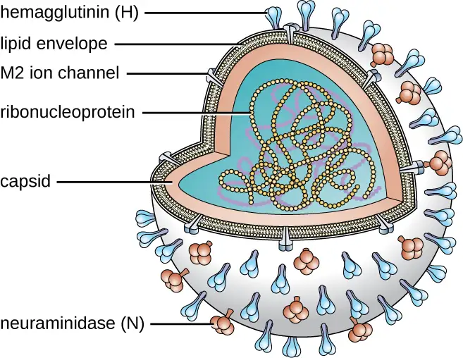
Following inhalation, the influenza virus uses the hemagglutinin protein to bind to sialic acid receptors on host respiratory epithelial cells. This facilitates endocytosis of the viral particle. Once inside the host cell, the negative strand viral RNA is replicated by the viral RNA polymerase to form mRNA, which is translated by the host to produce viral proteins. Additional viral RNA molecules are transcribed to produce viral genomic RNA, which assemble with viral proteins to form mature virions. Release of the virions from the host cell is facilitated by viral neuraminidase, which cleaves sialic-acid receptors to allow progeny viruses to make a clean exit when budding from an infected cell.
There are three genetically related influenza viruses, called A, B, and C. The influenza A viruses have different subtypes based on the structure of their hemagglutinin and neuraminidase proteins. There are currently 18 known subtypes of hemagglutinin and 11 known subtypes of neuraminidase. Influenza viruses are serologically characterized by the type of H and N proteins that they possess. Of the nearly 200 different combinations of H and N, only a few, such as the H1N1 strain, are associated with human disease. The influenza viruses A, B, and C make up three of the five major groups of orthomyxoviruses. The differences between the three types of influenza are summarized in Table 22.3. The most virulent group is the influenza A viruses, which cause seasonal pandemics of influenza each year. Influenza A virus can infect a variety of animals, including pigs, horses, and even whales and dolphins. Influenza B virus is less virulent and is sometimes associated with epidemic outbreaks. Influenza C virus generally produces the mildest disease symptoms and is rarely connected with epidemics. Neither influenza B virus nor influenza C virus has significant animal reservoirs.
Table 22.3
| The Three Major Groups of Influenza Viruses | |||
|---|---|---|---|
| Influenza A virus | Influenza B virus | Influenza C virus | |
| Severity | Severe | Moderate | Mild |
| Animal reservoir | Yes | No | No |
| Genome segments | 8 | 8 | 7 |
| Population spread | Epidemic and pandemic | Epidemic | Sporadic |
| Antigenic variation | Shift/drift | Drift | Drift |
Influenza virus infections elicit a strong immune response, particularly to the hemagglutinin protein, which would protect the individual if they encountered the same virus. Unfortunately, the antigenic properties of the virus change relatively rapidly, so new strains are evolving that immune systems previously challenged by influenza virus cannot recognize. When an influenza virus gains a new hemagglutinin or neuraminidase type, it is able to evade the host’s immune response and be successfully transmitted, often leading to an epidemic.
There are two mechanisms by which these evolutionary changes may occur. The mechanisms of antigen drift and antigenic shift for influenza virus have been described in Virulence Factors of Bacterial and Viral Pathogens. Of these two genetic processes, it is viruses produced by antigenic shift that have the potential to be extremely virulent because individuals previously infected by other strains are unlikely to produce any protective immune response against these novel variants.
The most lethal influenza pandemic in recorded history occurred from 1918 through 1919. Near the end of World War I, an antigenic shift involving the recombination of avian and human viruses is thought to have produced a new H1N1 virus. This strain rapidly spread worldwide and is commonly claimed to have killed as many as 40 million to 50 million people—more than double the number killed in the war. Although referred to as the Spanish flu, this disease is thought to have originated in the United States. Regardless of its source, the conditions of World War I greatly contributed to the spread of this disease. Crowding, poor sanitation, and rapid mobilization of large numbers of personnel and animals facilitated the dissemination of the new virus once it appeared.
Several of the most important influenza pandemics of modern times have been associated with antigenic shifts. A few of these are summarized in Table 22.4.
Table 22.4
| Historical Influenza Outbreaks202122 | |||
|---|---|---|---|
| Years | Common Name | Serotype | Estimated Number of Deaths |
| 1918–1919 | Spanish flu | H1N1 | 20,000,000–40,000,000 |
| 1957–1958 | Asian flu | N2N2 | 1,000,000–2,000,000 |
| 1968–1969 | Hong Kong flu | H3N2 | 1,000,000–3,000,000 |
| 2009–2010 | Swine flu | H1N1/09 | 152,000–575,000 |
Laboratory diagnosis of influenza is typically performed using a variety of RIDTs. These tests are inoculated by point-of-care personnel and give results within 15–20 minutes. Unfortunately, these tests have variable sensitivity and commonly yield false-negative results. Other tests include hemagglutination of erythrocytes (due to hemagglutinin action) or complement fixation. Patient serum antibodies against influenza viruses can also be detected in blood samples. Because influenza is self-limiting disease, diagnosis through these more time-consuming and expensive methods is not typically used.
Three drugs that inhibit influenza neuraminidase activity are available: inhaled zanamivir, oral oseltamivir, and intravenous peramivir. If taken at the onset of symptoms, these drugs can shorten the course of the disease. These drugs are thought to impair the ability of the virus to efficiently exit infected host cells. A more effective means of controlling influenza outbreaks, though, is vaccination. Every year, new influenza vaccines are developed to be effective against the strains expected to be predominant. This is determined in February by a review of the dominant strains around the world from a network of reporting sites; their reports are used to generate a recommendation for the vaccine combination for the following winter in the northern hemisphere. In September, a similar recommendation is made for the winter in the southern hemisphere.23 These recommendations are used by vaccine manufacturers to formulate each year’s vaccine. In most cases, three or four viruses are selected—the two most prevalent influenza A strains and one or two influenza B strains. The chosen strains are typically cultivated in eggs and used to produce either an inactivated or a live attenuated vaccine (e.g., FluMist). For individuals 18 years or older with an allergy to egg products, a recombinant egg-free trivalent vaccine is available. Most of the influenza vaccines over the past decade have had an effectiveness of about 50%.24
Case in Point: Flu Pandemic
During the spring of 2013, a new strain of H7N9 influenza was reported in China. A total of 132 people were infected. Of those infected, 44 (33%) died. A genetic analysis of the virus suggested that this strain arose from the reassortment of three different influenza viruses: a domestic duck H7N3 virus, a wild bird H7N9 virus, and a domestic poultry H9N2 virus. The virus was detected in the Chinese domestic bird flocks and contact with this reservoir is thought to have been the primary source of infection. This strain of influenza was not able to spread from person to person. Therefore, the disease did not become a global problem. This case does, though, illustrate the potential threat that influenza still represents. If a strain like the H7N9 virus were to undergo another antigenic shift, it could become more communicable in the human population. With a mortality rate of 33%, such a pandemic would be disastrous. For this reason, organizations like the World Health Organization and the Centers for Disease Control and Prevention keep all known influenza outbreaks under constant surveillance.
Check Your Understanding
- Compare the severity of the three types of influenza viruses.
- Why must new influenza vaccines be developed each year?
Viral Pneumonia¶
Viruses cause fewer cases of pneumonia than bacteria; however, several viruses can lead to pneumonia in children and the elderly. The most common sources of viral pneumonia are adenoviruses, influenza viruses, parainfluenza viruses, and respiratory syncytial viruses. The signs and symptoms produced by these viruses can range from mild cold-like symptoms to severe cases of pneumonia, depending on the virulence of the virus strain and the strength of the host defenses of the infected individual. Occasionally, infections can result in otitis media.
Respiratory syncytial virus (RSV) infections are fairly common in infants; most people have been infected by the age of 2 years. During infection, a viral surface protein causes host cells to fuse and form multinucleated giant cells called syncytia. There are no specific antiviral therapies or vaccines available for viral pneumonia. In adults, these infections are self-limiting, resemble the common cold, and tend to resolve uneventfully within 1 or 2 weeks. Infections in infants, however, can be life-threatening. RSV is highly contagious and can be spread through respiratory droplets from coughing and sneezing. RSV can also survive for a long time on environmental surfaces and, thus, be transmitted indirectly via fomites.
Check Your Understanding
- Who is most likely to contract viral pneumonia?
- What is the recommended treatment for viral pneumonia?
SARS and MERS¶
Severe acute respiratory syndrome (SARS) and Middle East respiratory syndrome (MERS) are two acute respiratory infections caused by coronaviruses. In both cases, these are thought to be zoonotic infections. Bats and civet cats are thought to have been the reservoirs for SARS; camels seem to be the reservoir for MERS.
SARS originated in southern China in the winter of 2002 and rapidly spread to 37 countries. Within about 1 year, more than 8,000 people experienced influenza-like symptoms and nearly 800 people died. The rapid spread and severity of these infections caused grave concern at the time. However, the outbreak was controlled in 2003 and no further cases of SARS have been recorded since 2004.25 Signs and symptoms of SARS include high fever, headache, body aches, and cough, and most patients will develop pneumonia.
MERS was first reported in Saudi Arabia in 2013. Although some infected individuals will be asymptomatic or have mild cold-like symptoms, most will develop a high fever, aches, cough and a severe respiratory infection that can progress to pneumonia. As of 2015, over 1,300 people in 27 countries have been infected. About 500 people have died. There are no specific treatments for either MERS or SARS. In addition, no vaccines are currently available. Several recombinant vaccines, however, are being developed.
Check Your Understanding
- What is the cause of SARS?
- What are the signs and symptoms of MERS?
Viral Respiratory Diseases Causing Skin Rashes¶
Measles, rubella (German measles), and chickenpox are three important viral diseases often associated with skin rashes. However, their symptoms are systemic, and because their portal of entry is the respiratory tract, they can be considered respiratory infections.
Measles (Rubeola)¶
The measles virus (MeV) causes the highly contagious disease measles, also known as rubeola, which is a major cause of childhood mortality worldwide. Although vaccination efforts have greatly reduced the incidence of measles in much of the world, epidemics are still common in unvaccinated populations in certain countries.26
The measles virus is a single-stranded, negative-strand RNA virus and, like the influenza virus, it possesses an envelope with spikes of embedded hemagglutinin. The infection is spread by direct contact with infectious secretions or inhalation of airborne droplets spread by breathing, coughing, or sneezing. Measles is initially characterized by a high fever, conjunctivitis, and a sore throat. The virus then moves systemically through the bloodstream and causes a characteristic rash. The measles rash initially forms on the face and later spreads to the extremities. The red, raised macular rash will eventually become confluent and can last for several days. At the same time, extremely high fevers (higher than 40.6 °C [105 °F]) can occur. Another diagnostic sign of measles infections is Koplik’s spots, white spots that form on the inner lining of inflamed cheek tissues (Figure 22.18).
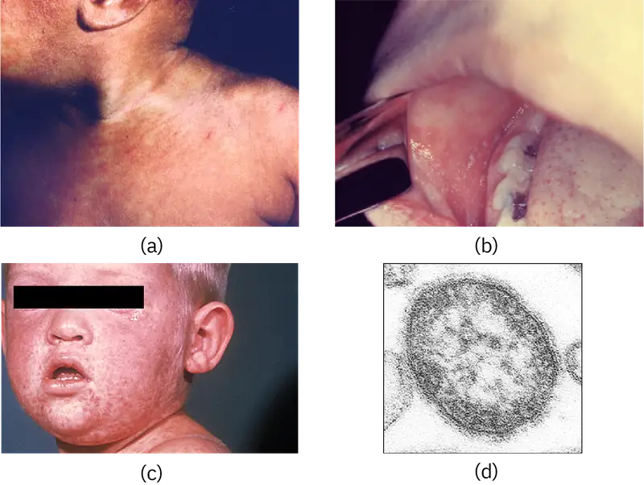
Although measles is usually self-limiting, it can lead to pneumonia, encephalitis, and death. In addition, the inhibition of immune system cells by the measles virus predisposes patients to secondary infections. In severe infections with highly virulent strains, measles fatality rates can be as high as 10% to 15%. There were more than 145,000 measles deaths (mostly young children) worldwide in 2013.27
The preliminary diagnosis of measles is typically based on the appearance of the rash and Koplik’s spots. Hemagglutination inhibition tests and serological tests may be used to confirm measles infections in low-prevalence settings.
There are no effective treatments for measles. Vaccination is widespread in developed countries as part of the measles, mumps, and rubella (MMR) vaccine. As a result, there are typically fewer than 200 cases of measles in the United States annually.28 When it is seen, it is often associated with children who have not been vaccinated.
Micro Connections: Preventable Measles Outbreaks
In December 2014, a measles epidemic began at Disneyland in southern California. Within just 4 months, this outbreak affected 134 people in 24 states.29 Characterization of the virus suggests that an unidentified infected individual brought the disease to the United States from the Philippines, where a similar virus had sickened more than 58,000 people and killed 110.30 Measles is highly communicable, and its spread at Disneyland may have been facilitated by the low vaccination rate in some communities in California.31
Several factors could conceivably lead to a strong comeback of measles in the U.S. Measles is still an epidemic disease in many locations worldwide. Air travel enables infected individuals to rapidly translocate these infections globally. Compounding this problem, low vaccination rates in some communities in the United States provide populations of susceptible hosts for the virus to establish itself. Finally, measles has been a low-prevalence infection in the U.S. for some time. As a consequence, physicians are not as likely to recognize the initial symptoms and make accurate diagnoses. Until vaccination rates become high enough to ensure herd immunity, measles is likely to be an ongoing problem in the United States.
Rubella (German Measles)¶
Rubella, or the German measles, is a relatively mild viral disease that produces a rash somewhat like that caused by the measles, even though the two diseases are unrelated. The rubella virus is an enveloped RNA virus that can be found in the respiratory tract. It is transmitted from person to person in aerosols produced by coughing or sneezing. Nearly half of all infected people remain asymptomatic. However, the virus is shed and spread by asymptomatic carriers. Like rubeola, rubella begins with a facial rash that spreads to the extremities (Figure 22.19). However, the rash is less intense, shorter lived (2–3 days), not associated with Koplik’s spots, and the resulting fever is lower (101 °F [38.3 °C]).
Congenital rubella syndrome is the most severe clinical complication of the German measles. This occurs if a person is infected with rubella during pregnancy. The rubella virus is teratogenic, meaning it can cause developmental defects if it crosses the placenta during pregnancy. There is a very high incidence of stillbirth, spontaneous abortion, or congenital birth defects if a person is infected before 11 weeks of pregnancy and 35% if they are infected between weeks 13–16; after this time the incidence is low.32 For this reason, prenatal screening for rubella is commonly practiced in the United States. Postnatal infections are usually self-limiting and rarely cause severe complications.
Like measles, the preliminary diagnosis of rubella is based on the patient’s history, vaccination records, and the appearance of the rash. The diagnosis can be confirmed by hemagglutinin inhibition assays and a variety of other immunological techniques. There are no antiviral therapies for rubella, but an effective vaccine (MMR) is widely available. Vaccination efforts have essentially eliminated rubella in the United States; fewer than a dozen cases are reported in a typical year.
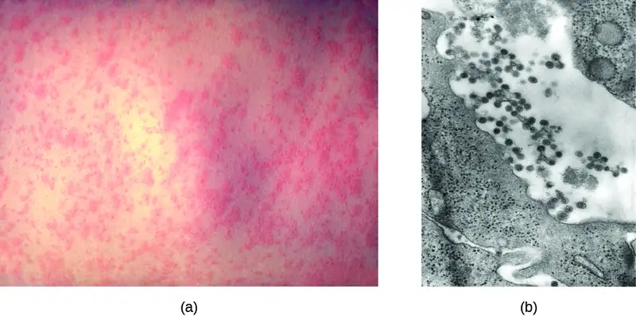
Chickenpox and Shingles¶
Chickenpox, also known as varicella, was once a common viral childhood disease. The causative agent of chickenpox, the varicella-zoster virus, is a member of the herpesvirus family. In children, the disease is mild and self-limiting, and is easily transmitted by direct contact or inhalation of material from the skin lesions. In adults, however, chickenpox infections can be much more severe and can lead to pneumonia and birth defects in the case of infected pregnant people. Reye syndrome, mentioned earlier in this chapter, is also a serious complication associated with chickenpox, generally in children.
Once infected, most individuals acquire a lifetime immunity to future chickenpox outbreaks. For this reason, parents once held “chickenpox parties” for their children. At these events, uninfected children were intentionally exposed to an infected individual so they would contract the disease earlier in life, when the incidence of complications is very low, rather than risk a more severe infection later.
After the initial viral exposure, chickenpox has an incubation period of about 2 weeks. The initial infection of the respiratory tract leads to viremia and eventually produces fever and chills. A pustular rash then develops on the face, progresses to the trunk, and then the extremities, although most form on the trunk (Figure 22.20). Eventually, the lesions burst and form a crusty scab. Individuals with chickenpox are infectious from about 2 days before the outbreak of the rash until all the lesions have scabbed over.
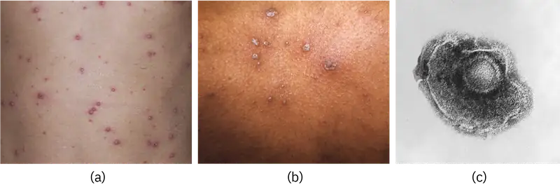
Like other herpesviruses, the varicella-zoster virus can become dormant in nerve cells. While the pustular vesicles are developing, the virus moves along sensory nerves to the dorsal ganglia in the spinal cord. Once there, the varicella-zoster virus can remain latent for decades. These dormant viruses may be reactivated later in life by a variety of stimuli, including stress, aging, and immunosuppression. Once reactivated, the virus moves along sensory nerves to the skin of the face or trunk. This results in the production of the painful lesions in a condition known as shingles (Figure 22.21). These symptoms generally last for 2–6 weeks, and may recur more than once. Postherpetic neuralgia, pain signals sent from damaged nerves long after the other symptoms have subsided, is also possible. In addition, the virus can spread to other organs in immunocompromised individuals. A person with shingles lesions can transmit the virus to a nonimmune contact, and the newly infected individual would develop chickenpox as the primary infection. Shingles cannot be transmitted from one person to another.
The primary diagnosis of chickenpox in children is mainly based on the presentation of a pustular rash of the trunk. Serological and PCR-based tests are available to confirm the initial diagnosis. Treatment for chickenpox infections in children is usually not required. In patients with shingles, acyclovir treatment can often reduce the severity and length of symptoms, and diminish the risk of postherpetic neuralgia. An effective vaccine is now available for chickenpox. A vaccine is also available for adults older than 60 years who were infected with chickenpox in their youth. This vaccine reduces the likelihood of a shingles outbreak by boosting the immune defenses that are keeping the latent infection in check and preventing reactivation.
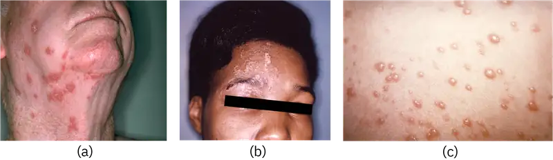
Check Your Understanding
- Why does measles often lead to secondary infections?
- What signs or symptoms would distinguish rubella and measles?
- Why can chickenpox lead to shingles later in life?
Eye on Ethics: Smallpox Stockpiles
Smallpox has probably killed more humans than any other infectious disease, with the possible exception of tuberculosis. This disease, caused by the variola major virus, is transmitted by inhalation of viral particles shed from lesions in the throat. The smallpox virus spreads systemically in the bloodstream and produces a pustular skin rash. Historical epidemics of smallpox had fatality rates of 50% or greater in susceptible populations. Concerted worldwide vaccination efforts eradicated smallpox from the general population in 1977. This was the first microbial disease in history to be eradicated, a feat made possible by the fact that the only reservoir for the smallpox virus is infected humans.
Although the virus is no longer present in the wild, laboratory samples of the virus still exist in the United States and Russia.33 The question is, why do these samples still exist? Some claim that these stocks should be maintained for research purposes. Should the smallpox virus ever reappear, they say, we would need access to such stocks for development of vaccines and treatments. Concerns about a re-emergence of the virus are not totally unfounded. Although there are no living reservoirs of the virus, there is always the possibility that smallpox could re-emerge from mummified human bodies or human remains preserved in permafrost. It is also possible that there are as-yet undiscovered samples of the virus in other locations around the world. An example of such "lost" samples was discovered in a drawer in a Food and Drug Administration lab in Maryland.34 If an outbreak from such a source were to occur, it could lead to uncontrolled epidemics, since the population is largely unvaccinated now.
Critics of this argument, including many research scientists and the World Health Organization, claim that there is no longer any rational argument for keeping the samples. They view the “re-emergence scenarios” as a thinly veiled pretense for harboring biological weapons. These scenarios, they say, are less probable than an intentional reintroduction of the virus from militarized stocks by humans. Furthermore, they point out that if we needed to research smallpox in the future, we could rebuild the virus from its DNA sequence.
What do you think? Are there legitimate arguments for maintaining stockpiles of smallpox, or should all forms of this deadly disease be eradicated?
Disease Profile: Viral Infections of the Respiratory Tract
Many viruses are capable of entering and causing disease in the respiratory system, and a number are able to spread beyond the respiratory system to cause systemic infections. Most of these infections are highly contagious and, with a few exceptions, antimicrobial drugs are not effective for treatment. Although some of these infections are self-limiting, others can have serious or fatal complications. Effective vaccines have been developed for several of these diseases, as summarized in Figure 22.22.
![Table title: Viral Infections of the Respiratory Tract. Columns: Disease, Pathogen, Signs and Symptoms, Transmission, Vaccine. Chickenpox (varicella); Varicella-zoster virus; In children, fever, chills, pustular rash of lesions that burst and form crusty scabs; in adults, more severe symptoms and complications (e.g., pneumonia); Highly contagious via contact with aerosols, particles, or droplets from infected individual’s blisters or respiratory secretions; Chickenpox vaccine. Common cold; Rhinoviruses, adenoviruses, coronaviruses, others; Runny nose, congestion, sore throat, sneezing, headaches and muscle aches; may lead to otitis media, pharyngitis, laryngitis; Highly contagious via contact with respiratory secretions or inhalation of droplets or aerosols; None. Influenza Influenza viruses A, B, C; Fever, chills, headaches, body aches, fatigue; may lead to pneumonia or complications such as Reye syndrome. Highly virulent strains may cause lethal complications; Highly contagious between humans via contact with respiratory secretions or inhalation of droplets or aerosols. Influenza A virus can be transmitted from animal reservoirs. Vaccines developed yearly against most prevalent strains. Measles; Measles virus (MeV); High fever, conjunctivitis, sore throat, macular rash becoming confluent, Koplik’s spots on oral mucosa; in severe cases, can lead to fatal pneumonia or encephalitis, especially in children; Highly contagious via contact with respiratory secretions, skin rash, or eye secretions of infected individual; MMR. MERS; Middle East respiratory syndrome coronavirus (MERS-CoV); Fever, cough, shortness of breath; in some cases, complications such as pneumonia and kidney failure; can be fatal; Contact with respiratory secretions or inhalation of droplets or aerosols; None. Rubella (German measles); Rubella virus; Facial rash spreading to extremities, followed by low-grade fever, headache, conjunctivitis, cough, runny nose, swollen lymph nodes; congenital rubella may cause birth defects, miscarriage, or stillbirth; Contagious via inhalation of droplets or aerosols from infected person or asymptomatic carrier; ransplacental infection from a pregnant person to fetus; MMR. SARS; SARS-associated coronavrius (SARS-CoV); High fever, headache, body aches, dry cough, pneumonia; can be fatal; Contact with respiratory secretions or inhalation of droplets or aerosols; None. Shingles; Varicella-zoster virus; Painful lesions on face or trunk lasting several weeks; may cause postherpetic neuralgia (chronic pain) or spread to organs in severe cases; Nontransmissible; occurs when dormant virus is reactivated, generally many years after initial chickenpox infection; Shingles vaccine. Viral pneumonia; Adenoviruses, influenza viruses, parainfluenza viruses, respiratory syncytial viruses, others; From mild cold-like symptoms to severe pneumonia; in infants, RSV infections may be life-threatening; Highly contagious via contact with respiratory secretions or inhalation of droplets or aerosols; None.](img/osc-microbio-22-03-viruses.webp)
22.4 Respiratory Mycoses¶
Learning Objectives
By the end of this section, you will be able to:
- Identify the most common fungi that can cause infections of the respiratory tract
- Compare the major characteristics of specific fungal diseases of the respiratory tract
Fungal pathogens are ubiquitous in the environment. Serological studies have demonstrated that most people have been exposed to fungal respiratory pathogens during their lives. Yet symptomatic infections by these microbes are rare in healthy individuals. This demonstrates the efficacy of the defenses of our respiratory system. In this section, we will examine some of the fungi that can cause respiratory infections.
Histoplasmosis¶
Histoplasmosis is a fungal disease of the respiratory system and most commonly occurs in the Mississippi Valley of the United States and in parts of Central and South America, Africa, Asia, and Australia. The causative agent, Histoplasma capsulatum, is a dimorphic fungus. This microbe grows as a filamentous mold in the environment but occurs as a budding yeast during human infections. The primary reservoir for this pathogen is soil, particularly in locations rich in bat or bird feces.
Histoplasmosis is acquired by inhaling microconidial spores in the air; this disease is not transmitted from human to human. The incidence of histoplasmosis exposure is high in endemic areas, with 60%–90% of the population having anti-Histoplasma antibodies, depending on location;35 however, relatively few individuals exposed to the fungus actually experience symptoms. Those most likely to be affected are the very young, the elderly, and immunocompromised people.
In many ways, the course of this disease is similar to that of tuberculosis. Following inhalation, the spores enter the lungs and are phagocytized by alveolar macrophages. The fungal cells then survive and multiply within these phagocytes (see Figure 5.26). Focal infections cause the formation of granulomatous lesions, which can lead to calcifications that resemble the Ghon complexes of tuberculosis, even in asymptomatic cases. Also like tuberculosis, histoplasmosis can become chronic and reactivation can occur, along with dissemination to other areas of the body (e.g., the liver or spleen).
Signs and symptoms of pulmonary histoplasmosis include fever, headache, and weakness with some chest discomfort. The initial diagnosis is often based on chest radiographs and cultures grown on fungal selective media like Sabouraud's dextrose agar. Direct fluorescence antibody staining and Giemsa staining can also be used to detect this pathogen. In addition, serological tests including a complement fixation assay and histoplasmin sensitivity can be used to confirm the diagnosis. In most cases, these infections are self-limiting and antifungal therapy is not required. However, in disseminated disease, the antifungal agents amphotericin B and ketoconazole are effective; itraconazole may be effective in immunocompromised patients, in whom the disease can be more serious.
Check Your Understanding
- In what environments is one more likely to be infected with histoplasmosis?
- Identify at least two similarities between histoplasmosis and tuberculosis.
Coccidioidomycosis¶
Infection by the dimorphic fungus Coccidioides immitis causes coccidioidomycosis. Because the microbe is endemic to the San Joaquin Valley of California, the disease is sometimes referred to as Valley fever. A related species that causes similar infections is found in semi-arid and arid regions of the southwestern United States, Mexico, and Central and South America.36
Like histoplasmosis, coccidioidomycosis is acquired by inhaling fungal spores—in this case, arthrospores formed by hyphal fragmentation. Once in the body, the fungus differentiates into spherules that are filled with endospores. Most C. immitis infections are asymptomatic and self-limiting. However, the infection can be very serious for immunocompromised patients. The endospores may be transported in the blood, disseminating the infection and leading to the formation of granulomatous lesions on the face and nose (Figure 22.23). In severe cases, other major organs can become infected, leading to serious complications such as fatal meningitis.
Coccidioidomycosis can be diagnosed by culturing clinical samples. C. immitis readily grows on laboratory fungal media, such as Sabouraud's dextrose agar, at 35 °C (95 °F). Culturing the fungus, however, is rather dangerous. C. immitis is one of the most infectious fungal pathogens known and is capable of causing laboratory-acquired infections. Indeed, until 2012, this organism was considered a “select agent” of bioterrorism and classified as a BSL-3 microbe. Serological tests for antibody production are more often used for diagnosis. Although mild cases generally do not require intervention, disseminated infections can be treated with intravenous antifungal drugs like amphotericin B.
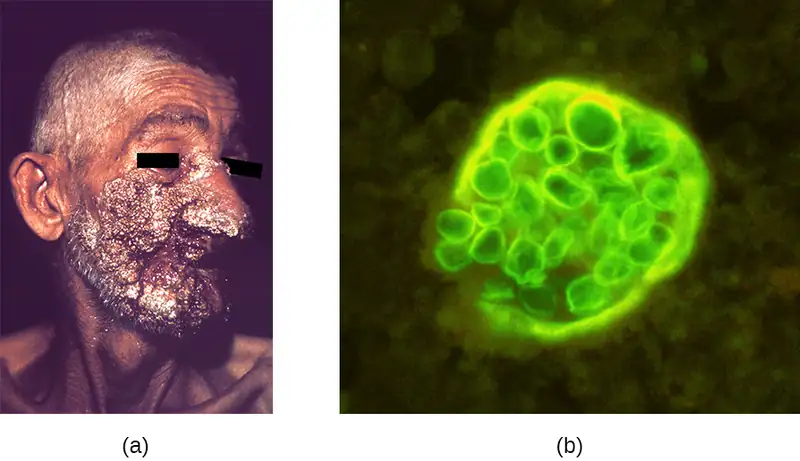
Clinical Focus: Resolution
John’s negative RIDT tests do not rule out influenza, since false-negative results are common, but the Legionella infection still must be treated with antibiotic therapy and is the more serious condition. John's prognosis is good, provided the physician can find an antibiotic therapy to which the infection responds.
While John was undergoing treatment, three of the employees from the home improvement store also reported to the clinic with very similar symptoms. All three were older than 55 years and had Legionella antigen in their urine; L. pneumophila was also isolated from their sputum. A team from the health department was sent to the home improvement store to identify a probable source for these infections. Their investigation revealed that about 3 weeks earlier, the store's air conditioning system, which was located where the employees ate lunch, had been undergoing maintenance. L. pneumophila was isolated from the cooling coils of the air conditioning system and intracellular L. pneumophila was observed in amoebae in samples of condensed water from the cooling coils as well (Figure 22.24). The amoebae provide protection for the Legionella bacteria and are known to enhance their pathogenicity.37
In the wake of the infections, the store ordered a comprehensive cleaning of the air conditioning system and implemented a regular maintenance program to prevent the growth of biofilms within the cooling tower. They also reviewed practices at their other facilities.
After a month of rest at home, John recovered from his infection enough to return to work, as did the other three employees of the store. However, John experienced lethargy and joint pain for more than a year after his treatment.
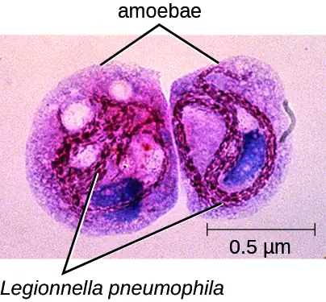
Go back to the previous Clinical Focus box.
Blastomycosis¶
Blastomycosis is a rare disease caused by another dimorphic fungus, Blastomyces dermatitidis. Like Histoplasma and Coccidioides, Blastomyces uses the soil as a reservoir, and fungal spores can be inhaled from disturbed soil. The pulmonary form of blastomycosis generally causes mild flu-like symptoms and is self-limiting. It can, however, become disseminated in immunocompromised people, leading to chronic cutaneous disease with subcutaneous lesions on the face and hands (Figure 22.25). These skin lesions eventually become crusty and discolored and can result in deforming scars. Systemic blastomycosis is rare, but if left untreated, it is always fatal.
Preliminary diagnosis of pulmonary blastomycosis can be made by observing the characteristic budding yeast forms in sputum samples. Commercially available urine antigen tests are now also available. Additional confirmatory tests include serological assays such as immunodiffusion tests or EIA. Most cases of blastomycosis respond well to amphotericin B or ketoconazole treatments.
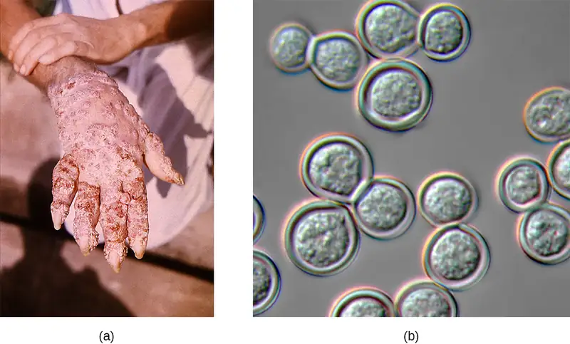
Link to Learning
Watch this profile of a blastomycosis lung infection.
Mucormycosis¶
A variety of fungi in the order Mucorales cause mucormycosis, a rare fungal disease. These include bread molds, like Rhizopus and Mucor; the most commonly associated species is Rhizopus arrhizus (oryzae) (see Figure 5.28). These fungi can colonize many different tissues in immunocompromised patients, but often infect the skin, sinuses, or the lungs.
Although most people are regularly exposed to the causative agents of mucormycosis, infections in healthy individuals are rare. Exposure to spores from the environment typically occurs through inhalation, but the spores can also infect the skin through a wound or the gastrointestinal tract if ingested. Respiratory mucormycosis primarily affects immunocompromised individuals, such as patients with cancer or those who have had a transplant.38
After the spores are inhaled, the fungi grow by extending hyphae into the host’s tissues. Infections can occur in both the upper and lower respiratory tracts. Rhinocerebral mucormycosis is an infection of the sinuses and brain; symptoms include headache, fever, facial swelling, congestion, and tissue necrosis causing black lesions in the oral cavity. Pulmonary mucormycosis is an infection of the lungs; symptoms include fever, cough, chest pain, and shortness of breath. In severe cases, infections may become disseminated and involve the central nervous system, leading to coma and death.39
Diagnosing mucormycosis can be challenging. Currently, there are no serological or PCR-based tests available to identify these infections. Tissue biopsy specimens must be examined for the presence of the fungal pathogens. The causative agents, however, are often difficult to distinguish from other filamentous fungi. Infections are typically treated by the intravenous administration of amphotericin B, and superficial infections are removed by surgical debridement. Since the patients are often immunocompromised, viral and bacterial secondary infections commonly develop. Mortality rates vary depending on the site of the infection, the causative fungus, and other factors, but a recent study found an overall mortality rate of 54%.40
Check Your Understanding
- Compare the modes of transmission for coccidioidomycosis, blastomycosis, and mucormycosis.
- In general, which are more serious: the pulmonary or disseminated forms of these infections?
Aspergillosis¶
Aspergillus is a common filamentous fungus found in soils and organic debris. Nearly everyone has been exposed to this mold, yet very few people become sick. In immunocompromised patients, however, Aspergillus may become established and cause aspergillosis. Inhalation of spores can lead to asthma-like allergic reactions. The symptoms commonly include shortness of breath, wheezing, coughing, runny nose, and headaches. Fungal balls, or aspergilloma, can form when hyphal colonies collect in the lungs (Figure 22.26). The fungal hyphae can invade the host tissues, leading to pulmonary hemorrhage and a bloody cough. In severe cases, the disease may progress to a disseminated form that is often fatal. Death most often results from pneumonia or brain hemorrhages.
Laboratory diagnosis typically requires chest radiographs and a microscopic examination of tissue and respiratory fluid samples. Serological tests are available to identify Aspergillus antigens. In addition, a skin test can be performed to determine if the patient has been exposed to the fungus. This test is similar to the Mantoux tuberculin skin test used for tuberculosis. Aspergillosis is treated with intravenous antifungal agents, including itraconazole and voriconazole. Allergic symptoms can be managed with corticosteroids because these drugs suppress the immune system and reduce inflammation. However, in disseminated infections, corticosteroids must be discontinued to allow a protective immune response to occur.
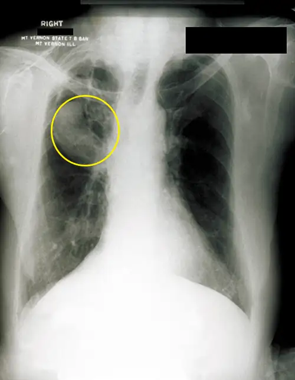
Pneumocystis Pneumonia¶
A type of pneumonia called Pneumocystis pneumonia (PCP) is caused by Pneumocystis jirovecii. Once thought to be a protozoan, this organism was formerly named P. carinii but it has been reclassified as a fungus and renamed based on biochemical and genetic analyses. Pneumocystis is a leading cause of pneumonia in patients with acquired immunodeficiency syndrome (AIDS) and can be seen in other compromised patients and premature infants. Respiratory infection leads to fever, cough, and shortness of breath. Diagnosis of these infections can be difficult. The organism is typically identified by microscopic examination of tissue and fluid samples from the lungs (Figure 22.27). A PCR-based test is available to detect P. jirovecii in asymptomatic patients with AIDS. The best treatment for these infections is the combination drug trimethoprim-sulfamethoxazole (TMP/SMZ). These sulfa drugs often have adverse effects, but the benefits outweigh these risks. Left untreated, PCP infections are often fatal.
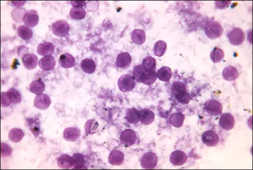
Cryptococcosis¶
Infection by the encapsulated yeast Cryptococcus neoformans causes cryptococcosis. This fungus is ubiquitous in the soil and can be isolated from bird feces. Immunocompromised people are infected by inhaling basidiospores found in aerosols. The thick polysaccharide capsule surrounding these microbes enables them to avoid clearance by the alveolar macrophage. Initial symptoms of infection include fever, fatigue, and a dry cough. In immunocompromised patients, pulmonary infections often disseminate to the brain. The resulting meningitis produces headaches, sensitivity to light, and confusion. Left untreated, such infections are often fatal.
Cryptococcus infections are often diagnosed based on microscopic examination of lung tissues or cerebrospinal fluids. India ink preparations (Figure 22.28) can be used to visualize the extensive capsules that surround the yeast cells. Serological tests are also available to confirm the diagnosis. Amphotericin B, in combination with flucytosine, is typically used for the initial treatment of pulmonary infections. Amphotericin B is a broad-spectrum antifungal drug that targets fungal cell membranes. It can also adversely impact host cells and produce side effects. For this reason, clinicians must carefully balance the risks and benefits of treatments in these patients. Because it is difficult to eradicate cryptococcal infections, patients usually need to take fluconazole for up to 6 months after treatment with amphotericin B and flucytosine to clear the fungus. Cryptococcal infections are more common in immunocompromised people, such as those with AIDS. These patients typically require life-long suppressive therapy to control this fungal infection.
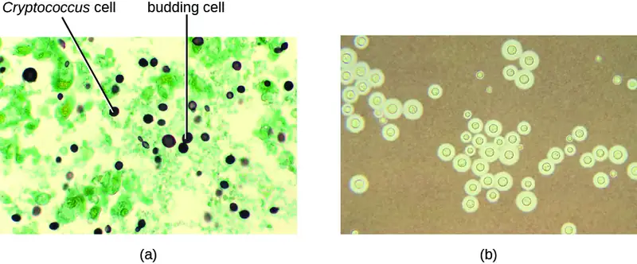
Check Your Understanding
- What populations are most at risk for developing Pneumocystis pneumonia or cryptococcosis?
- Why are these infections fatal if left untreated?
Disease Profile: Fungal Diseases of the Respiratory Tract
Most respiratory mycoses are caused by fungi that inhabit the environment. Such infections are generally transmitted via inhalation of fungal spores and cannot be transmitted between humans. In addition, healthy people are generally not susceptible to infection even when exposed; the fungi are only virulent enough to establish infection in patients with HIV, AIDS, or another condition that compromises the immune defenses. Figure 22.29 summarizes the features of important respiratory mycoses.
![Table titled: Fungal Infections of the Respiratory Tract. Columns: Disease, Pathogen, Signs and Symptoms, Diagnostic Tests, Antimicrobial Drugs. Aspergillosis; Aspergillus fumigatus; Shortness of breath, wheezing, coughing, runny nose, headaches; formation of aspergillomas causing severe pneumonia and pulmonary or brain hemorrhages; can be fatal; Chest radiograph, skin test, microscopic observation of sputum samples; Itraconazole, voriconazole. Blastomycosis; Blastomyces dermatitidis; Fever, chills, cough, headache, fatigue, chest pain, body aches; in disseminated infections, chronic, crusted lesions on face and hands with permanent scarring; can be fatal; Microscopic observation of sputum samples; urine antigen test; EIA; Amphotericin B, ketoconazole; Coccidioidomycosis (Valley fever); Coccidioides immitis; Granulomatous lesions on face and nose; may spread to organs or brain, causing fatal meningitis; Culture (in BSL-3 lab only), serological antibody tests; Amphotericin B. Cryptococcosis; Cryptococcus neoformans; Fever, cough, shortness of breath; can cause fatal meningitis if disseminated to brain; Microscopic examination of lung tissue or cerebrospinal fluid; Amphotericin B, fluconazole, flucytosine. Histoplasmosis; Histoplasma capsulatum; Fever, headache, weakness, chest pain, lesions on lungs; Chest radiograph, culture, direct fluorescence antibody staining, complement fixation assay, histoplasmin sensitivity test Amphotericin B, ketoconazole, itraconazole. Mucormycosis; Rhizopus arrhizus, other Rhizopus spp., Mucor spp.; Headache, fever, facial swelling, congestion, black lesions in oral cavity, cough, chest pain, shortness of breath; often fatal; Microscopic examination of tissue biopsy specimens; Amphotericin B. Pneumocystis pneumonia (PCP); Pneumocystis jirovecii Fever, cough, shortness of breath; can be fatal if untreated Microscopic examination of lung tissue and fluid, PCR; Trimethoprim-sulfamethoxazole.](img/osc-microbio-22-04-disproftabl.webp)
Chapter Review¶
Key Concepts and Summary¶
22.1 Anatomy and Normal Microbiota of the Respiratory Tract¶
- The respiratory tract is divided into upper and lower regions at the epiglottis.
- Air enters the upper respiratory tract through the nasal cavity and mouth, which both lead to the pharynx. The lower respiratory tract extends from the larynx into the trachea before branching into the bronchi, which divide further to form the bronchioles, which terminate in alveoli, where gas exchange occurs.
- The upper respiratory tract is colonized by an extensive and diverse normal microbiota, many of which are potential pathogens. Few microbial inhabitants have been found in the lower respiratory tract, and these may be transients.
- Members of the normal microbiota may cause opportunistic infections, using a variety of strategies to overcome the innate nonspecific defenses (including the mucociliary escalator) and adaptive specific defenses of the respiratory system.
- Effective vaccines are available for many common respiratory pathogens, both bacterial and viral.
- Most respiratory infections result in inflammation of the infected tissues; these conditions are given names ending in -itis, such as rhinitis, sinusitis, otitis, pharyngitis, and bronchitis.
22.2 Bacterial Infections of the Respiratory Tract¶
- A wide variety of bacteria can cause respiratory diseases; most are treatable with antibiotics or preventable with vaccines.
- Streptococcus pyogenes causes strep throat, an infection of the pharynx that also causes high fever and can lead to scarlet fever, acute rheumatic fever, and acute glomerulonephritis.
- Acute otitis media is an infection of the middle ear that may be caused by several bacteria, including Streptococcus pneumoniae, Haemophilus influenzae, and Moraxella catarrhalis. The infection can block the eustachian tubes, leading to otitis media with effusion.
- Diphtheria, caused by Corynebacterium diphtheriae, is now a rare disease because of widespread vaccination. The bacteria produce exotoxins that kill cells in the pharynx, leading to the formation of a pseudomembrane; and damage other parts of the body.
- Bacterialpneumonia results from infections that cause inflammation and fluid accumulation in the alveoli. It is most commonly caused by S. pneumoniae or H. influenzae. The former is commonly multidrug resistant.
- Mycoplasma pneumonia results from infection by Mycoplasma pneumoniae; it can spread quickly, but the disease is mild and self-limiting.
- Chlamydial pneumonia can be caused by three pathogens that are obligate intracellular parasites. Chlamydia pneumoniae is typically transmitted from an infected person, whereas C. psittaci is typically transmitted from an infected bird. Chlamydia trachomatis, may cause pneumonia in infants.
- Several other bacteria can cause pneumonia in immunocompromised individuals and those with cystic fibrosis.
- Tuberculosis is caused by Mycobacterium tuberculosis. Infection leads to the production of protective tubercles in the alveoli and calcified Ghon complexes that can harbor the bacteria for a long time. Antibiotic-resistant forms are common and treatment is typically long term.
- Pertussis is caused by Bordetella pertussis. Mucus accumulation in the lungs leads to prolonged severe coughing episodes (whooping cough) that facilitate transmission. Despite an available vaccine, outbreaks are still common.
- Legionnaires disease is caused by infection from environmental reservoirs of the Legionella pneumophila bacterium. The bacterium is endocytic within macrophages and infection can lead to pneumonia, particularly among immunocompromised individuals.
- Q fever is caused by Coxiella burnetii, whose primary hosts are domesticated mammals (zoonotic disease). It causes pneumonia primarily in farm workers and can lead to serious complications, such as endocarditis.
22.3 Viral Infections of the Respiratory Tract¶
- Viruses cause respiratory tract infections more frequently than bacteria, and most viral infections lead to mild symptoms.
- The common cold can be caused by more than 200 viruses, typically rhinoviruses, coronaviruses, and adenoviruses, transmitted by direct contact, aerosols, or environmental surfaces.
- Due to its ability to rapidly mutate through antigenic drift and antigenic shift, influenza remains an important threat to human health. Two new influenza vaccines are developed annually.
- Several viral infections, including respiratorysyncytialvirus infections, which frequently occur in the very young, can begin with mild symptoms before progressing to viral pneumonia.
- SARS and MERS are acute respiratory infections caused by coronaviruses, and both appear to originate in animals. SARS has not been seen in the human population since 2004 but had a high mortality rate during its outbreak. MERS also has a high mortality rate and continues to appear in human populations.
- Measles, rubella, and chickenpox are highly contagious, systemic infections that gain entry through the respiratory system and cause rashes and fevers. Vaccines are available for all three. Measles is the most severe of the three and is responsible for significant mortality around the world. Chickenpox typically causes mild infections in children but the virus can reactivate to cause painful cases of shingles later in life.
22.4 Respiratory Mycoses¶
- Fungal pathogens rarely cause respiratory disease in healthy individuals, but inhalation of fungal spores can cause severe pneumonia and systemic infections in immunocompromised patients.
- Antifungal drugs like amphotericin B can control most fungal respiratory infections.
- Histoplasmosis is caused by a mold that grows in soil rich in bird or bat droppings. Few exposed individuals become sick, but vulnerable individuals are susceptible. The yeast-like infectious cells grow inside phagocytes.
- Coccidioidomycosis is also acquired from soil and, in some individuals, will cause lesions on the face. Extreme cases may infect other organs, causing death.
- Blastomycosis, a rare disease caused by a soil fungus, typically produces a mild lung infection but can become disseminated in the immunocompromised. Systemic cases are fatal if untreated.
- Mucormycosis is a rare disease, caused by fungi of the order Mucorales. It primarily affects immunocompromised people. Infection involves growth of the hyphae into infected tissues and can lead to death in some cases.
- Aspergillosis, caused by the common soil fungus Aspergillus, infects immunocompromised people. Hyphal balls may impede lung function and hyphal growth into tissues can cause damage. Disseminated forms can lead to death.
- Pneumocystis pneumonia is caused by the fungus P. jirovecii. The disease is found in patients with AIDS and other immunocompromised individuals. Sulfa drug treatments have side effects, but untreated cases may be fatal.
- Cryptococcosis is caused by Cryptococcus neoformans. Lung infections may move to the brain, causing meningitis, which can be fatal.
Multiple Choice¶
22.1 Anatomy and Normal Microbiota of the Respiratory Tract¶
1. Which of the following is not directly connected to the nasopharynx?
- middle ear
- oropharynx
- lacrimal glands
- nasal cavity
Answer
C
2. What type of cells produce the mucus for the mucous membranes?
- goblet cells
- macrophages
- phagocytes
- ciliated epithelial cells
Answer
A
3. Which of these correctly orders the structures through which air passes during inhalation?
- pharynx → trachea → larynx → bronchi
- pharynx → larynx → trachea → bronchi
- larynx → pharynx → bronchi → trachea
- larynx → pharynx → trachea → bronchi
Answer
B
4. The ___________ separates the upper and lower respiratory tract.
- bronchi
- larynx
- epiglottis
- palatine tonsil
Answer
C
5. Which microbial virulence factor is most important for attachment to host respiratory tissues?
- adhesins
- lipopolysaccharide
- hyaluronidase
- capsules
Answer
A
22.2 Bacterial Infections of the Respiratory Tract¶
6. Which of the following does not involve a bacterial exotoxin?
- diphtheria
- whooping cough
- scarlet fever
- Q fever
Answer
D
7. What disease is caused by Coxiella burnetii?
- Q fever
- tuberculosis
- diphtheria
- walking pneumonia
Answer
A
8. In which stage of pertussis is the characteristic whooping sound made?
- convalescence
- catarrhal
- paroxysmal
- prodromal
Answer
C
9. What is the causative agent of Q fever?
- Coxiella burnetii
- Chlamydia psittaci
- Mycoplasma pneumoniae
- Streptococcus pyogenes
Answer
A
10. Which of these microbes causes “walking pneumonia”?
- Klebsiella pneumoniae
- Streptococcus pneumoniae
- Mycoplasma pneumoniae
- Chlamydia pneumoniae
Answer
C
22.3 Viral Infections of the Respiratory Tract¶
11. Which of the following viruses is not commonly associated with the common cold?
- coronavirus
- adenovirus
- rhinovirus
- varicella-zoster virus
Answer
D
12. Which of the following viral diseases has been eliminated from the general population worldwide?
- smallpox
- measles
- German measles
- influenza
Answer
A
13. What term refers to multinucleated cells that form when many host cells fuse together during infections?
- Ghon elements
- Reye syndrome
- Koplik’s spots
- syncytia
Answer
D
14. Which of the following diseases is not associated with coronavirus infections?
- Middle East respiratory syndrome
- German measles
- the common cold
- severe acute respiratory syndrome
Answer
B
15. Which of these viruses is responsible for causing shingles?
- rubella virus
- measles virus
- varicella-zoster virus
- variola major virus
Answer
C
22.4 Respiratory Mycoses¶
16. Which of these infections is also referred to as Valley fever?
- histoplasmosis
- coccidioidomycosis
- blastomycosis
- aspergillosis
Answer
B
17. Which of the following is not caused by a dimorphic fungus?
- histoplasmosis
- coccidioidomycosis
- blastomycosis
- aspergillosis
Answer
D
18. Which of the following is caused by infections by bread molds?
- mucormycosis
- coccidioidomycosis
- cryptococcosis
- Pneumocystis pneumonia
Answer
A
19. In the United States, most histoplasmosis cases occur
- in the Pacific northwest.
- in the desert southwest.
- in the Mississippi river valley.
- in Colorado river valley.
Answer
C
20. Which of the following infections can be diagnosed using a skin test similar to the tuberculin test?
- histoplasmosis
- cryptococcosis
- blastomycosis
- aspergillosis
Answer
D
Fill in the Blank¶
22.1 Anatomy and Normal Microbiota of the Respiratory Tract¶
21. Unattached microbes are moved from the lungs to the epiglottis by the _______ effect.
Answer
mucociliary escalator
22. Many bacterial pathogens produce _______ to evade phagocytosis.
Answer
capsules
23. The main type of antibody in the mucous membrane defenses is _______.
Answer
IgA
24. _______ results from an inflammation of the “voice box.”
Answer
Laryngitis
25. _______ phagocytize potential pathogens in the lower lung.
Answer
Alveolar macrophages
22.2 Bacterial Infections of the Respiratory Tract¶
26. Calcified lesions called _______ form in the lungs of patients with TB.
Answer
Ghon complexes
27. An inflammation of the middle ear is called _______.
Answer
otitis media
28. The _______ is used to serologically identify Streptococcus pneumoniae isolates.
Answer
quellung reaction
29. _______ is a zoonotic infection that can be contracted by people who handle birds.
Answer
Psittacosis
30. The main virulence factor involved in scarlet fever is the _______.
Answer
erythrogenic toxin
22.3 Viral Infections of the Respiratory Tract¶
31. The _______ virus is responsible for causing German measles.
Answer
rubella
32. A(n) _______ is an uncontrolled positive feedback loop between cytokines and leucocytes.
Answer
cytokine storm
33. In cases of shingles, the antiviral drug _______ may be prescribed.
Answer
acyclovir
34. The slow accumulation of genetic changes to an influenza virus over time is referred to as _______.
Answer
antigenic drift
35. The _______ vaccine is effective in controlling both measles and rubella.
Answer
MMR
22.4 Respiratory Mycoses¶
36. In coccidioidomycosis, _______ containing many endospores form in the lungs.
Answer
spherules
37. In cryptococcosis, the main fungal virulence factor is the _______, which helps the pathogen avoid phagocytosis.
Answer
capsule
38. In some mycoses, fungal balls called _______ form in the lungs
Answer
aspergillomas
39. Most US cases of coccidioidomycosis occur in _______.
Answer
the desert southwest
40. Coccidioidomycosis may develop when Coccidioides immitis _______ are inhaled.
Answer
arthrospores
Short Answer¶
22.1 Anatomy and Normal Microbiota of the Respiratory Tract¶
41. Explain why the lower respiratory tract is essentially sterile.
42. Explain why pneumonia is often a life-threatening disease.
22.2 Bacterial Infections of the Respiratory Tract¶
43. Name three bacteria that commonly cause pneumonia. Which is the most common cause?
44. How does smoking make an individual more susceptible to infections?
45. How does the diphtheria pathogen form a pseudomembrane?
22.3 Viral Infections of the Respiratory Tract¶
46. Since we all have experienced many colds in our lifetime, why are we not resistant to future infections?
22.4 Respiratory Mycoses¶
47. Which pulmonary fungal infection is most likely to be confused with tuberculosis? How can we discriminate between these two types of infection?
48. Compare and contrast aspergillosis and mucormycosis.
Critical Thinking¶
22.1 Anatomy and Normal Microbiota of the Respiratory Tract¶
49. Name each of the structures of the respiratory tract shown, and state whether each has a relatively large or small normal microbiota.
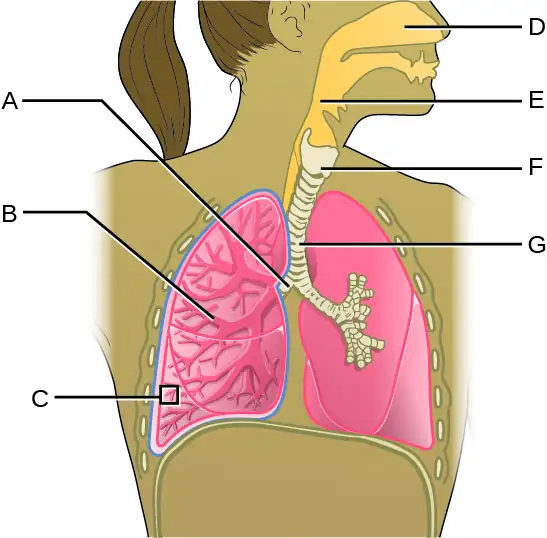
50. Cystic fibrosis causes, among other things, excess mucus to be formed in the lungs. The mucus is very dry and caked, unlike the moist, more-fluid mucus of normal lungs. What effect do you think that has on the lung’s defenses?
51. Why do you think smokers are more likely to suffer from respiratory tract infections?
22.2 Bacterial Infections of the Respiratory Tract¶
52. Why might β-lactam antibiotics be ineffective against Mycoplasma pneumoniae infections?
53. Why is proper antibiotic therapy especially important for patients with tuberculosis?
22.3 Viral Infections of the Respiratory Tract¶
54. What role does the common cold have in the rise of antibiotic-resistant strains of bacteria in the United States?
55. Why is it highly unlikely that influenza A virus will ever be eradicated, like the smallpox virus?
22.4 Respiratory Mycoses¶
56. Why are fungal pulmonary infections rarely transmissible from person to person?
Adapted from Microbiology by OpenStax, licensed under CC BY 4.0. Access the original for free at openstax.org. Changes: converted to the web reading format of The Open Book Project.
-
World Health Organization. “The Top Ten Causes of Death.” May 2014. http://www.who.int/mediacentre/factsheets/fs310/en/ ↩
-
J. Kluytmans et al. “Nasal Carriage of Staphylococcus aureus: Epidemiology, Underlying Mechanisms, and Associated Risks.” Clinical Microbiology Reviews 10 no. 3 (1997):505–520. ↩
-
Full names of vaccines listed in table: Haemophilus influenzae type B (Hib); Diphtheria, tetanus, and acellular pertussis (DtaP); tetanus, diphtheria, and acellular pertussis (Tdap); diphtheria and tetanus (DT); tetanus and diphtheria (Td); diphtheria, pertussis, and tetanus (DTP); Bacillus Calmette-Guérin; Measles, mumps, rubella (MMR) ↩
-
WL Lean et al. “Rapid Diagnostic Tests for Group A Streptococcal Pharyngitis: A Meta-Analysis.” Pediatrics 134, no. 4 (2014):771–781. ↩
-
G. Worrall. “Acute Otitis Media.” Canadian Family Physician 53 no. 12 (2007):2147–2148. ↩
-
KD Kochanek et al. “Deaths: Final Data for 2014.” National Vital Statistics Reports 65 no 4 (2016). ↩
-
SM Koenig et al. “Ventilator-Associated Pneumonia: Diagnosis, Treatment, and Prevention.” Clinical Microbiology Reviews 19 no. 4 (2006):637–657. ↩
-
R. Sordé et al. “Management of Refractory Pseudomonas aeruginosa Infection in Cystic Fibrosis.” Infection and Drug Resistance 4 (2011):31–41. ↩
-
Centers for Disease Control and Prevention. “Tuberculosis (TB). Data and Statistics.” http://www.cdc.gov/tb/statistics/default.htm ↩
-
D. Saini et al. “Ultra-Low Dose of Mycobacterium tuberculosis Aerosol Creates Partial Infection in Mice.” Tuberculosis 92 no. 2 (2012):160–165. ↩
-
G. Kaplan et al. “Mycobacterium tuberculosis Growth at the Cavity Surface: A Microenvironment with Failed Immunity.” Infection and Immunity 71 no.12 (2003):7099–7108. ↩
-
Centers for Disease Control and Prevention. “2012 Final Pertussis Surveillance Report.” 2015. http://www.cdc.gov/pertussis/downloads/pertuss-surv-report-2012.pdf. Accessed July 6, 2016. ↩
-
Centers for Disease Control and Prevention. “2015 Provisional Pertussis Surveillance Report.” 2016. http://www.cdc.gov/pertussis/downloads/pertuss-surv-report-2015-provisional.pdf. Accessed July 6, 2016. ↩
-
Centers for Disease Control and Prevention. “Legionella (Legionnaires’ Disease and Pontiac Fever: Diagnosis, Treatment, and Complications).” http://www.cdc.gov/legionella/about/diagnosis.html. Accessed Sept 14, 2016. ↩
-
WD Tigertt et al. “Airborne Q Fever.” Bacteriological Reviews 25 no. 3 (1961):285–293. ↩
-
Centers for Disease Control and Prevention. “Q fever. Symptoms, Diagnosis, and Treatment.” 2013. http://www.cdc.gov/qfever/symptoms/index.html. Accessed July 6, 2016. ↩
-
AG L’Huillier et al. “Survival of Rhinoviruses on Human Fingers.” Clinical Microbiology and Infection 21, no. 4 (2015):381–385. ↩
-
Centers for Disease Control and Prevention. “Estimating Seasonal Influenza-Associated Deaths in the United States: CDC Study Confirms Variability of Flu.” 2016. http://www.cdc.gov/flu/about/disease/us_flu-related_deaths.htm. Accessed July 6, 2016. ↩
-
ED Belay et al. “Reye’s Syndrome in the United States From 1981 Through 1997.” New England Journal of Medicine 340 no. 18 (1999):1377–1382. ↩
-
CE Mills et al. “Transmissibility of 1918 Pandemic Influenza.” Nature 432, no. 7019 (2004):904–906. ↩
-
E. Tognotti. “Influenza Pandemics: A Historical Retrospect.” Journal of Infection in Developing Countries 3, no. 5 (2009):331–334. ↩
-
FS Dawood et al. “Estimated Global Mortality Associated with the First 12 Months of 2009 Pandemic Influenza A H1N1 Virus Circulation: A Modelling Study.” The Lancet Infectious Diseases 12, no. 9 (2012):687–695. ↩
-
World Health Organization. “WHO Report on Global Surveillance of Epidemic-Prone Infectious Diseases.” 2000. http://www.who.int/csr/resources/publications/surveillance/Influenza.pdf. Accessed July 6, 2016. ↩
-
Centers of Disease Control and Prevention. “Vaccine Effectiveness - How Well Does the Flu Vaccine Work?” 2016. http://www.cdc.gov/flu/about/qa/vaccineeffect.htm. Accessed July 6, 2016. ↩
-
Y. Huang. “The SARS Epidemic and Its Aftermath in China: A Political Perspective.” In Learning from SARS: Preparing for the Next Disease Outbreak. Edited by S. Knobler et al. Washington, DC: National Academies Press; 2004. Available at: http://www.ncbi.nlm.nih.gov/books/NBK92479/ ↩
-
Centers for Disease Control and Prevention. “Global Health - Measles, Rubella, and CRS, Eliminating Measles, Rubella & Congenital Rubella Syndrome (CRS) Worldwide.” 2015. http://www.cdc.gov/globalhealth/measles/. Accessed July 7, 2016. ↩
-
World Health Organization. “Measles Factsheet.” 2016. http://www.who.int/mediacentre/factsheets/fs286/en/. Accessed July 7, 2016. ↩
-
Centers for Disease Control and Prevention. “Measles Cases and Outbreaks.” 2016. http://www.cdc.gov/measles/cases-outbreaks.html. Accessed July 7, 2016. ↩
-
Ibid. ↩
-
World Health Organization. “Measles-Rubella Bulletin.” Manila, Philippines; Expanded Programme on Immunization Regional Office for the Western Pacific World Health Organization; 9 no. 1 (2015). http://www.wpro.who.int/immunization/documents/mrbulletinvol9issue1.pdf ↩
-
M. Bloch et al. “Vaccination Rates for Every Kindergartener in California.” The New York Times February 6, 2015. http://www.nytimes.com/interactive/2015/02/06/us/california-measles-vaccines-map.html?_r=1. Accessed July 7, 2016. ↩
-
E. Miller et al. “Consequences of Confirmed Maternal Rubella at Successive Stages of Pregnancy.” The Lancet 320, no. 8302 (1982):781–784. ↩
-
Centers for Disease Control and Prevention. “CDC Media Statement on Newly Discovered Smallpox Specimens.” July 8, 2014. http://www.cdc.gov/media/releases/2014/s0708-nih.html. Accessed on July 7, 2016. ↩
-
Ibid. ↩
-
NE Manos et al. “Geographic Variation in the Prevalence of Histoplasmin Sensitivity.” Dis Chest 29, no. 6 (1956):649–668. ↩
-
DR Hospenthal. “Coccioidomycosis.” Medscape. 2015. http://emedicine.medscape.com/article/215978-overview. Accessed July 7, 2016. ↩
-
HY Lau and NJ Ashbolt. “The Role of Biofilms and Protozoa in Legionella Pathogenesis: Implications for Drinking Water.” Journal of Applied Microbiology 107 no. 2 (2009):368–378. ↩
-
Centers for Disease Control and Prevention. “Fungal Diseases. Definition of Mucormycosis.” 2015 http://www.cdc.gov/fungal/diseases/mucormycosis/definition.html. Accessed July 7, 2016. ↩
-
Centers for Disease Control and Prevention. “Fungal Diseases. Symptoms of Mucormycosis.” 2015 http://www.cdc.gov/fungal/diseases/mucormycosis/symptoms.html. Accessed July 7, 2016. ↩
-
MM Roden et al. “Epidemiology and Outcome of Zygomycosis: A Review of 929 Reported Cases.” Clinical Infectious Diseases 41 no. 5 (2005):634–653. ↩